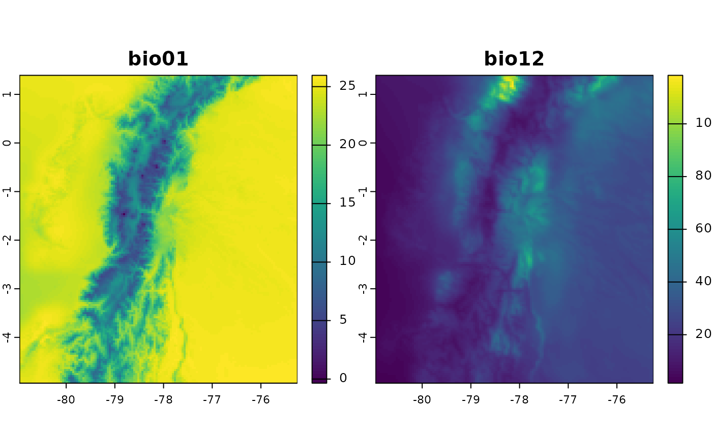
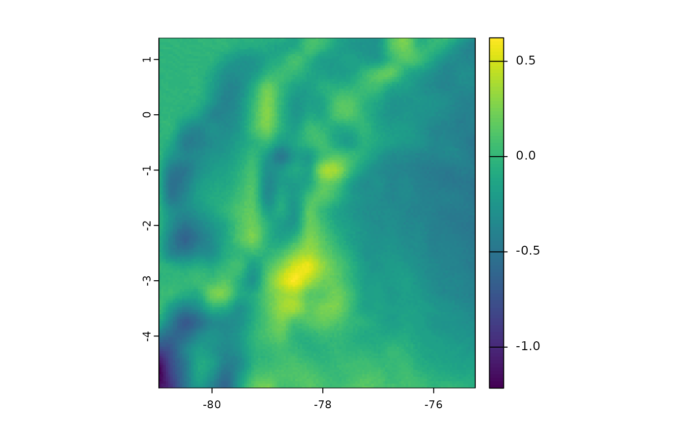
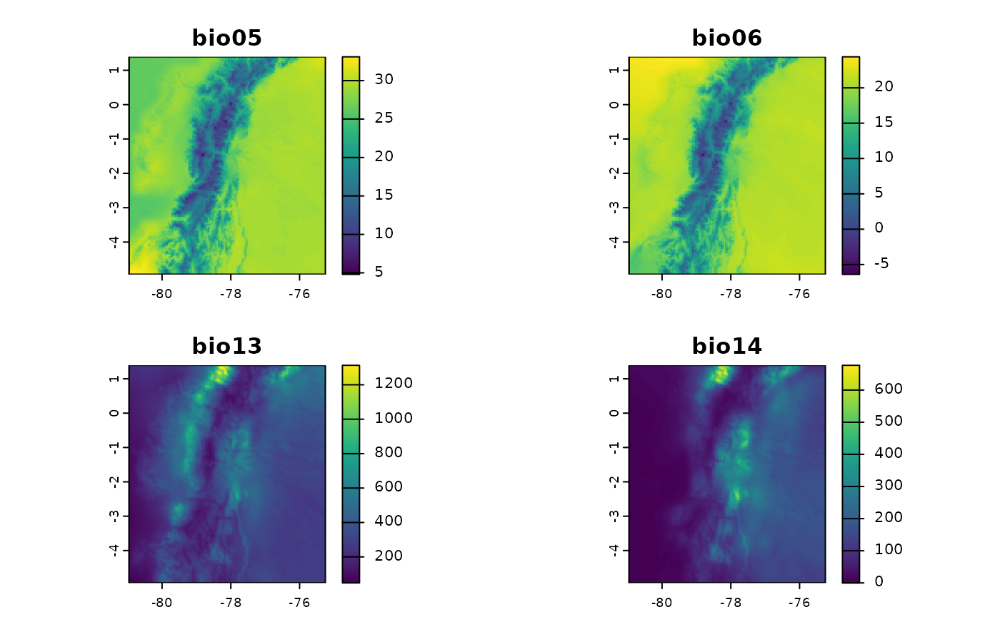
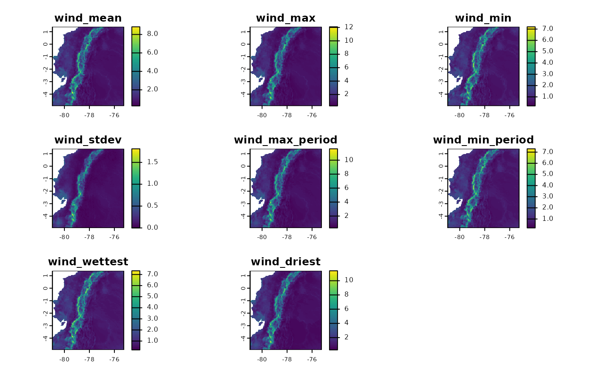
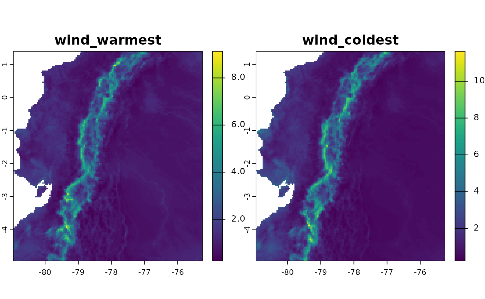
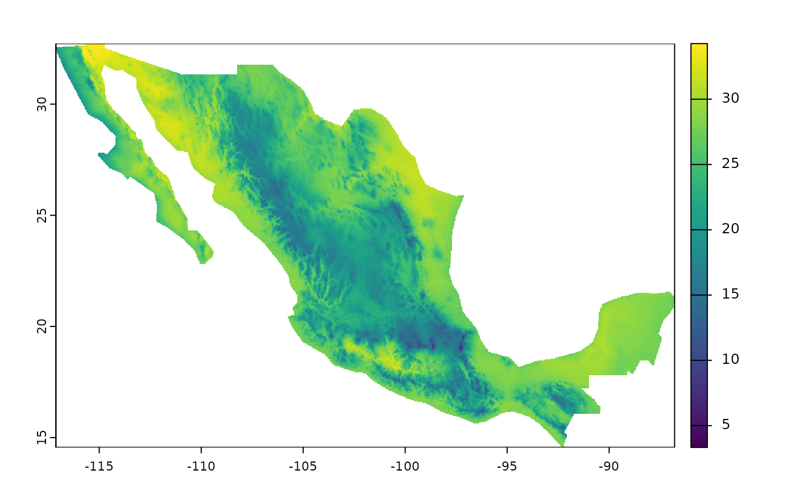

Paquete fastbioclim: Derivación eficiente de
variables bioclimáticas
El paquete fastbioclim está diseñado para generar
variables bioclimáticas de manera eficiente, utilizando dos flujos de
trabajo (workflows) distintos.
En Memoria (“terra”): El primer método se basa en el
paquete terra y es ideal cuando los rásters pueden ser
procesados completamente en la memoria RAM del computador.
Fuera de Memoria (“tiled”): El segundo método está
diseñado para grandes rásters. Divide el área de interés en mosaicos (o
cuadrículas) que son procesados de forma independiente utilizando los
paquetes exactextractr y Rfast. Este enfoque
out-of-core (fuera de memoria) permite analizar datos de
cualquier tamaño, sin importar la memoria RAM disponible.
La principal ventaja de fastbioclim es que puede
seleccionar de forma inteligente el método más adecuado con el argumento
method = "auto", garantizando siempre el mejor balance
entre velocidad y uso de memoria.
Además de su rendimiento, fastbioclim ofrece una gran
flexibilidad:
- Permite calcular un subconjunto de variables sin necesidad de generar el conjunto completo.
- Expande el conjunto a 35 variables bioclimáticas, incluyendo radiación solar (bios 20-27) y resúmenes de humedad (bios 28-35) basados en la nomenclatura de ANUCLIM 6.1 (Xu & Hutchinson, 2012).
- Ofrece la opción de definir períodos de tiempo personalizados (ej. semanas, semestres) para las variables basadas en períodos (como bio08 o bio18).
- Permite utilizar un ráster de temperatura promedio real (parámetro
tavg), en lugar de la aproximación estándar de (tmax + tmin) / 2. - Permite analizar cualquier variable temporal (velocidad del viento,
humedad, etc.) con la misma arquitectura potente y escalable, usando la
función
derive_statistics(). - Permite el uso de índices estáticos para un control avanzado, ideal para análisis de series temporales (p. ej., asegurar que el “período más cálido” se refiera siempre a los mismos meses cada año).
La funcionalidad de fastbioclim está inspirada en la
función biovars() del paquete dismo, con el
objetivo de agilizar y escalar el proceso de creación de variables
bioclimáticas para el modelado ecológico y ambiental.
Aviso: Este paquete está en desarrollo
Este paquete de R está actualmente en desarrollo y puede contener errores, fallos o características incompletas.
Se agradecen las contribuciones y los informes de errores. Si encuentra problemas o tiene sugerencias de mejora, por favor abra un issue en el repositorio de GitHub.
Instalación
Para instalar fastbioclim, puede utilizar el paquete
remotes. Si aún no lo tiene instalado, puede hacerlo
ejecutando:
install.packages("remotes")
remotes::install_github("gepinillab/fastbioclim")Instale y cargue los paquetes necesarios:
# Cargue librerías e instálelas si es necesario
if (!require("terra")) {
install.packages("terra")
}
if (!require("future.apply")) {
install.packages("future.apply")
}
if (!require("progressr")) {
install.packages("progressr")
}
if (!require("fastbioclim")) {
remotes::install_github("gepinillab/fastbioclim")
}Obtener las 19 variables bioclimáticas para Ecuador
Al igual que biovars(), este paquete requiere que el
usuario provea las variables climáticas promedio por unidad de tiempo
para el cálculo de variables. Tradicionalmente dichas unidades de tiempo
corresponden a promedios mensuales de temperatura y precipitación para
decenas de años. Para este ejemplo vamos a usar variables obtenidas y
procesadas de CHELSA v2.1 (Karger et al., 2017) para Ecuador que están
disponibles dentro del paquete (solo en la versión de GitHub).
# Obtener lista de rasters y crear un spatRaster para cada variable
# Temperatura mínima
tmin_ecu <- system.file("extdata/ecuador/", package = "fastbioclim") |>
list.files("tmin", full.names = TRUE) |> rast()
# Temperatura máxima
tmax_ecu <- system.file("extdata/ecuador/", package = "fastbioclim") |>
list.files("tmax", full.names = TRUE) |> rast()
# Precipitación
prcp_ecu <- system.file("extdata/ecuador/", package = "fastbioclim") |>
list.files("prcp", full.names = TRUE) |> rast()
# Definir directorio donde se guardarán los rasters
output_dir_bioclim <- file.path(tempdir(), "bioclim_ecuador")
# Obtener las 19 variables para Ecuador
bioclim_ecu <- derive_bioclim(
bios = 1:19,
tmin = tmin_ecu,
tmax = tmax_ecu,
prcp = prcp_ecu,
output_dir = output_dir_bioclim,
overwrite = TRUE
)
# Plot bio01 y bio12
plot(bioclim_ecu[[c("bio01", "bio12")]])
Usando temperatura promedio como input
El paquete fastbioclim también ofrece la opción de usar
temperatura promedio (definida con el parámetro tavg) para
el cálculo de variables bioclimáticas.
# Temperatura promedio
tavg_ecu <- system.file("extdata/ecuador/", package = "fastbioclim") |>
list.files("tavg", full.names = TRUE) |> rast()
# Definir directorio donde se guardarán los rasters
output_dir_bioclim_v2 <- file.path(tempdir(), "bioclim_ecuador_v2")
bioclim_ecu_v2 <- derive_bioclim(
bios = 1:19,
tavg = tavg_ecu,
tmin = tmin_ecu,
tmax = tmax_ecu,
prcp = prcp_ecu,
output_dir = output_dir_bioclim_v2,
overwrite = TRUE
)
# Diferencia entre bio01s cuando se usa tavg
plot(bioclim_ecu_v2[["bio01"]] - bioclim_ecu[["bio01"]])
Seleccionar un grupo de variables
Muchas veces no es necesario utilizar todas las variables
bioclimáticas en nuestros análisis. Por este motivo, y a diferencia de
biovars(), se puede definir en el parámetro
bios el número que identifica cada una de las variables
bioclimáticas. De esta forma no es necesario obtener todas las 19
variables para luego solo seleccionar las variables de interés. En el
siguiente ejemplo solo se obtendrán cuatro variables (bio05, bio06,
bio13 y bio14). Este ejemplo es algo más rápido, ya que no es necesario
calcular internamente los trimestres más cálidos/fríos o
secos/húmedos.
bios4_ecu <- derive_bioclim(
tmin = tmin_ecu,
tmax = tmax_ecu,
prcp = prcp_ecu,
bios = c(5, 6, 13, 14),
overwrite = TRUE
)
plot(bios4_ecu)
Construir resúmenes con otras variables
Otra funcionalidad importante de fastbioclim es la
opción de obtener estadísticas similares a las bioclimáticas pero con
otras variables. Como ejemplo, realizaremos resúmenes de variables
promedio mensuales de viento. Para las variables interactivas
trimestrales, usaremos los trimestres más húmedos y secos.
wind_ecu <- system.file("extdata/ecuador/", package = "fastbioclim") |>
list.files("wind", full.names = TRUE) |> rast()
wind_dir_ecu <- file.path(tempdir(), "wind_ecuador")
ecu_stats <- derive_statistics(
variable = wind_ecu,
stats = c("mean", "max", "min", "stdev", "max_period", "min_period"),
inter_variable = prcp_ecu,
inter_stats = c("max_inter", "min_inter"),
prefix_variable = "wind",
suffix_inter_max = "wettest",
suffix_inter_min = "driest",
overwrite = TRUE,
output_dir = wind_dir_ecu
)
plot(ecu_stats)
También se pueden construir subconjuntos de variables, en este caso vamos a construir variables de viento, pero solo basado en la interacción con la temperatura, las cuales corresponden a “Viento en el trimestre más cálido” y “Viento en el trimestre más frío”.
ecu_stats_v2 <- derive_statistics(
variable = wind_ecu,
stats = NULL,
inter_variable = tavg_ecu,
inter_stats = c("max_inter", "min_inter"),
prefix_variable = "wind",
suffix_inter_max = "warmest",
suffix_inter_min = "coldest",
overwrite = TRUE,
output_dir = wind_dir_ecu
)
plot(ecu_stats_v2)
Construir Neotrópico: 35 variables
Basado en la nomenclatura de ANUCLIM 6.1 (Xu & Hutchinson, 2012),
derive_bioclim() también ofrece la opción de crear
variables bioclimáticas basadas en índices de humedad (moisture
en inglés) y radiación solar. En este caso, vamos a construir las 35
variables bioclimáticas para la extensión que cubra el Neotrópico.
En este caso, el método “auto” debería usar la creación de las
variables usando el método de “tiles” (mosaicos). Pero también se puede
forzar a usar dicho método usando el parámetro
method="tiled". Este método dividirá el área de interés en
mosaicos usando los grados decimales definidos en el parámetro
tile_degrees (5 es el valor por defecto).
Paralelización: También es importante mencionar que
el método ‘tiled’ se puede paralelizar usando
future::plan(). Para más información consulte la
documentación de dicho paquete.
Barra de progreso: La barra de progreso está
disponible usando el paquete progressr. Para activarla es
necesario usar la función progressr::handlers() o
progressr::with_progress(). Para más información consulte
la documentación de dicho paquete.
# Obtener lista de rasters y crear un spatRaster para cada variable
# Temperatura promedio
tavg_neo <- system.file("extdata/neotropics/", package = "fastbioclim") |>
list.files("tavg", full.names = TRUE) |> rast()
# Temperatura mínima
tmin_neo <- system.file("extdata/neotropics/", package = "fastbioclim") |>
list.files("tmin", full.names = TRUE) |> rast()
# Temperatura máxima
tmax_neo <- system.file("extdata/neotropics/", package = "fastbioclim") |>
list.files("tmax", full.names = TRUE) |> rast()
# Precipitación
prcp_neo <- system.file("extdata/neotropics/", package = "fastbioclim") |>
list.files("prcp", full.names = TRUE) |> rast()
# Radiación solar
srad_neo <- system.file("extdata/neotropics/", package = "fastbioclim") |>
list.files("srad", full.names = TRUE) |> rast()
# Índice climático de humedad
mois_neo <- system.file("extdata/neotropics/", package = "fastbioclim") |>
list.files("cmi", full.names = TRUE) |> rast()
# Definir directorio donde se guardarán los rasters
output_dir_neo <- file.path(tempdir(), "bioclim_neotropics")
# Activar barra de progreso
# progressr::handlers(global = TRUE)
# Definir plan de paralelización
# future::plan("multisession", workers = 4)
# Obtener las 35 variables para el Neotrópico
bioclim_neo <- derive_bioclim(
bios = 1:35,
tavg = tavg_neo,
tmin = tmin_neo,
tmax = tmax_neo,
prcp = prcp_neo,
srad = srad_neo,
mois = mois_neo,
method = "tiled",
tile_degrees = 20,
output_dir = output_dir_neo,
overwrite = TRUE
)## Warning in st_collection_extract.sf(rtt, c("POLYGON")): x is already of type
## POLYGON.## Warning in .local(x, y, ...): No CRS specified for polygons; assuming they have
## the same CRS as the raster.
## Warning in .local(x, y, ...): No CRS specified for polygons; assuming they have
## the same CRS as the raster.
## Warning in .local(x, y, ...): No CRS specified for polygons; assuming they have
## the same CRS as the raster.
## Warning in .local(x, y, ...): No CRS specified for polygons; assuming they have
## the same CRS as the raster.
## Warning in .local(x, y, ...): No CRS specified for polygons; assuming they have
## the same CRS as the raster.
## Warning in .local(x, y, ...): No CRS specified for polygons; assuming they have
## the same CRS as the raster.
## Warning in .local(x, y, ...): No CRS specified for polygons; assuming they have
## the same CRS as the raster.
## Warning in .local(x, y, ...): No CRS specified for polygons; assuming they have
## the same CRS as the raster.
## Warning in .local(x, y, ...): No CRS specified for polygons; assuming they have
## the same CRS as the raster.
## Warning in .local(x, y, ...): No CRS specified for polygons; assuming they have
## the same CRS as the raster.
## Warning in .local(x, y, ...): No CRS specified for polygons; assuming they have
## the same CRS as the raster.
## Warning in .local(x, y, ...): No CRS specified for polygons; assuming they have
## the same CRS as the raster.
## Warning in .local(x, y, ...): No CRS specified for polygons; assuming they have
## the same CRS as the raster.
## Warning in .local(x, y, ...): No CRS specified for polygons; assuming they have
## the same CRS as the raster.
## Warning in .local(x, y, ...): No CRS specified for polygons; assuming they have
## the same CRS as the raster.
## Warning in .local(x, y, ...): No CRS specified for polygons; assuming they have
## the same CRS as the raster.
## Warning in .local(x, y, ...): No CRS specified for polygons; assuming they have
## the same CRS as the raster.
## Warning in .local(x, y, ...): No CRS specified for polygons; assuming they have
## the same CRS as the raster.
## Warning in .local(x, y, ...): No CRS specified for polygons; assuming they have
## the same CRS as the raster.
## Warning in .local(x, y, ...): No CRS specified for polygons; assuming they have
## the same CRS as the raster.
## Warning in .local(x, y, ...): No CRS specified for polygons; assuming they have
## the same CRS as the raster.
## Warning in .local(x, y, ...): No CRS specified for polygons; assuming they have
## the same CRS as the raster.
## Warning in .local(x, y, ...): No CRS specified for polygons; assuming they have
## the same CRS as the raster.
## Warning in .local(x, y, ...): No CRS specified for polygons; assuming they have
## the same CRS as the raster.
## Warning in .local(x, y, ...): No CRS specified for polygons; assuming they have
## the same CRS as the raster.## | | | 0% | | | 1% | |= | 2% | |== | 3% | |== | 4% | |== | 5% | |=== | 5% | |=== | 6% | |=== | 7% | |==== | 8% | |===== | 9% | |===== | 10% | |===== | 11% | |====== | 11% | |====== | 12% | |====== | 13% | |======= | 14% | |======== | 15% | |======== | 16% | |======== | 17% | |========= | 17% | |========= | 18% | |========= | 19% | |========== | 20% | |=========== | 21% | |=========== | 22% | |=========== | 23% | |============ | 23% | |============ | 24% | |============ | 25% | |============= | 26% | |============== | 27% | |============== | 28% | |============== | 29% | |=============== | 29% | |=============== | 30% | |=============== | 31% | |================ | 32% | |================= | 33% | |================= | 34% | |================= | 35% | |================== | 35% | |================== | 36% | |================== | 37% | |=================== | 38% | |==================== | 39% | |==================== | 40% | |==================== | 41% | |===================== | 41% | |===================== | 42% | |===================== | 43% | |====================== | 44% | |======================= | 45% | |======================= | 46% | |======================= | 47% | |======================== | 47% | |======================== | 48% | |======================== | 49% | |========================= | 50% | |========================== | 51% | |========================== | 52% | |========================== | 53% | |=========================== | 53% | |=========================== | 54% | |=========================== | 55% | |============================ | 56% | |============================= | 57% | |============================= | 58% | |============================= | 59% | |============================== | 59% | |============================== | 60% | |============================== | 61% | |=============================== | 62% | |================================ | 63% | |================================ | 64% | |================================ | 65% | |================================= | 65% | |================================= | 66% | |================================= | 67% | |================================== | 68% | |=================================== | 69% | |=================================== | 70% | |=================================== | 71% | |==================================== | 71% | |==================================== | 72% | |==================================== | 73% | |===================================== | 74% | |====================================== | 75% | |====================================== | 76% | |====================================== | 77% | |======================================= | 77% | |======================================= | 78% | |======================================= | 79% | |======================================== | 80% | |========================================= | 81% | |========================================= | 82% | |========================================= | 83% | |========================================== | 83% | |========================================== | 84% | |========================================== | 85% | |=========================================== | 86% | |============================================ | 87% | |============================================ | 88% | |============================================ | 89% | |============================================= | 89% | |============================================= | 90% | |============================================= | 91% | |============================================== | 92% | |=============================================== | 93% | |=============================================== | 94% | |=============================================== | 95% | |================================================ | 95% | |================================================ | 96% | |================================================ | 97% | |================================================= | 98% | |==================================================| 99% | |==================================================| 100%## | | | 0% | | | 1% | |= | 2% | |== | 3% | |== | 4% | |== | 5% | |=== | 5% | |=== | 6% | |=== | 7% | |==== | 8% | |===== | 9% | |===== | 10% | |===== | 11% | |====== | 11% | |====== | 12% | |====== | 13% | |======= | 14% | |======== | 15% | |======== | 16% | |======== | 17% | |========= | 17% | |========= | 18% | |========= | 19% | |========== | 20% | |=========== | 21% | |=========== | 22% | |=========== | 23% | |============ | 23% | |============ | 24% | |============ | 25% | |============= | 26% | |============== | 27% | |============== | 28% | |============== | 29% | |=============== | 29% | |=============== | 30% | |=============== | 31% | |================ | 32% | |================= | 33% | |================= | 34% | |================= | 35% | |================== | 35% | |================== | 36% | |================== | 37% | |=================== | 38% | |==================== | 39% | |==================== | 40% | |==================== | 41% | |===================== | 41% | |===================== | 42% | |===================== | 43% | |====================== | 44% | |======================= | 45% | |======================= | 46% | |======================= | 47% | |======================== | 47% | |======================== | 48% | |======================== | 49% | |========================= | 50% | |========================== | 51% | |========================== | 52% | |========================== | 53% | |=========================== | 53% | |=========================== | 54% | |=========================== | 55% | |============================ | 56% | |============================= | 57% | |============================= | 58% | |============================= | 59% | |============================== | 59% | |============================== | 60% | |============================== | 61% | |=============================== | 62% | |================================ | 63% | |================================ | 64% | |================================ | 65% | |================================= | 65% | |================================= | 66% | |================================= | 67% | |================================== | 68% | |=================================== | 69% | |=================================== | 70% | |=================================== | 71% | |==================================== | 71% | |==================================== | 72% | |==================================== | 73% | |===================================== | 74% | |====================================== | 75% | |====================================== | 76% | |====================================== | 77% | |======================================= | 77% | |======================================= | 78% | |======================================= | 79% | |======================================== | 80% | |========================================= | 81% | |========================================= | 82% | |========================================= | 83% | |========================================== | 83% | |========================================== | 84% | |========================================== | 85% | |=========================================== | 86% | |============================================ | 87% | |============================================ | 88% | |============================================ | 89% | |============================================= | 89% | |============================================= | 90% | |============================================= | 91% | |============================================== | 92% | |=============================================== | 93% | |=============================================== | 94% | |=============================================== | 95% | |================================================ | 95% | |================================================ | 96% | |================================================ | 97% | |================================================= | 98% | |==================================================| 99% | |==================================================| 100%## | | | 0% | | | 1% | |= | 2% | |== | 3% | |== | 4% | |== | 5% | |=== | 5% | |=== | 6% | |=== | 7% | |==== | 8% | |===== | 9% | |===== | 10% | |===== | 11% | |====== | 11% | |====== | 12% | |====== | 13% | |======= | 14% | |======== | 15% | |======== | 16% | |======== | 17% | |========= | 17% | |========= | 18% | |========= | 19% | |========== | 20% | |=========== | 21% | |=========== | 22% | |=========== | 23% | |============ | 23% | |============ | 24% | |============ | 25% | |============= | 26% | |============== | 27% | |============== | 28% | |============== | 29% | |=============== | 29% | |=============== | 30% | |=============== | 31% | |================ | 32% | |================= | 33% | |================= | 34% | |================= | 35% | |================== | 35% | |================== | 36% | |================== | 37% | |=================== | 38% | |==================== | 39% | |==================== | 40% | |==================== | 41% | |===================== | 41% | |===================== | 42% | |===================== | 43% | |====================== | 44% | |======================= | 45% | |======================= | 46% | |======================= | 47% | |======================== | 47% | |======================== | 48% | |======================== | 49% | |========================= | 50% | |========================== | 51% | |========================== | 52% | |========================== | 53% | |=========================== | 53% | |=========================== | 54% | |=========================== | 55% | |============================ | 56% | |============================= | 57% | |============================= | 58% | |============================= | 59% | |============================== | 59% | |============================== | 60% | |============================== | 61% | |=============================== | 62% | |================================ | 63% | |================================ | 64% | |================================ | 65% | |================================= | 65% | |================================= | 66% | |================================= | 67% | |================================== | 68% | |=================================== | 69% | |=================================== | 70% | |=================================== | 71% | |==================================== | 71% | |==================================== | 72% | |==================================== | 73% | |===================================== | 74% | |====================================== | 75% | |====================================== | 76% | |====================================== | 77% | |======================================= | 77% | |======================================= | 78% | |======================================= | 79% | |======================================== | 80% | |========================================= | 81% | |========================================= | 82% | |========================================= | 83% | |========================================== | 83% | |========================================== | 84% | |========================================== | 85% | |=========================================== | 86% | |============================================ | 87% | |============================================ | 88% | |============================================ | 89% | |============================================= | 89% | |============================================= | 90% | |============================================= | 91% | |============================================== | 92% | |=============================================== | 93% | |=============================================== | 94% | |=============================================== | 95% | |================================================ | 95% | |================================================ | 96% | |================================================ | 97% | |================================================= | 98% | |==================================================| 99% | |==================================================| 100%## | | | 0% | | | 1% | |= | 2% | |== | 3% | |== | 4% | |== | 5% | |=== | 5% | |=== | 6% | |=== | 7% | |==== | 8% | |===== | 9% | |===== | 10% | |===== | 11% | |====== | 11% | |====== | 12% | |====== | 13% | |======= | 14% | |======== | 15% | |======== | 16% | |======== | 17% | |========= | 17% | |========= | 18% | |========= | 19% | |========== | 20% | |=========== | 21% | |=========== | 22% | |=========== | 23% | |============ | 23% | |============ | 24% | |============ | 25% | |============= | 26% | |============== | 27% | |============== | 28% | |============== | 29% | |=============== | 29% | |=============== | 30% | |=============== | 31% | |================ | 32% | |================= | 33% | |================= | 34% | |================= | 35% | |================== | 35% | |================== | 36% | |================== | 37% | |=================== | 38% | |==================== | 39% | |==================== | 40% | |==================== | 41% | |===================== | 41% | |===================== | 42% | |===================== | 43% | |====================== | 44% | |======================= | 45% | |======================= | 46% | |======================= | 47% | |======================== | 47% | |======================== | 48% | |======================== | 49% | |========================= | 50% | |========================== | 51% | |========================== | 52% | |========================== | 53% | |=========================== | 53% | |=========================== | 54% | |=========================== | 55% | |============================ | 56% | |============================= | 57% | |============================= | 58% | |============================= | 59% | |============================== | 59% | |============================== | 60% | |============================== | 61% | |=============================== | 62% | |================================ | 63% | |================================ | 64% | |================================ | 65% | |================================= | 65% | |================================= | 66% | |================================= | 67% | |================================== | 68% | |=================================== | 69% | |=================================== | 70% | |=================================== | 71% | |==================================== | 71% | |==================================== | 72% | |==================================== | 73% | |===================================== | 74% | |====================================== | 75% | |====================================== | 76% | |====================================== | 77% | |======================================= | 77% | |======================================= | 78% | |======================================= | 79% | |======================================== | 80% | |========================================= | 81% | |========================================= | 82% | |========================================= | 83% | |========================================== | 83% | |========================================== | 84% | |========================================== | 85% | |=========================================== | 86% | |============================================ | 87% | |============================================ | 88% | |============================================ | 89% | |============================================= | 89% | |============================================= | 90% | |============================================= | 91% | |============================================== | 92% | |=============================================== | 93% | |=============================================== | 94% | |=============================================== | 95% | |================================================ | 95% | |================================================ | 96% | |================================================ | 97% | |================================================= | 98% | |==================================================| 99% | |==================================================| 100%## | | | 0% | | | 1% | |= | 2% | |== | 3% | |== | 4% | |== | 5% | |=== | 5% | |=== | 6% | |=== | 7% | |==== | 8% | |===== | 9% | |===== | 10% | |===== | 11% | |====== | 11% | |====== | 12% | |====== | 13% | |======= | 14% | |======== | 15% | |======== | 16% | |======== | 17% | |========= | 17% | |========= | 18% | |========= | 19% | |========== | 20% | |=========== | 21% | |=========== | 22% | |=========== | 23% | |============ | 23% | |============ | 24% | |============ | 25% | |============= | 26% | |============== | 27% | |============== | 28% | |============== | 29% | |=============== | 29% | |=============== | 30% | |=============== | 31% | |================ | 32% | |================= | 33% | |================= | 34% | |================= | 35% | |================== | 35% | |================== | 36% | |================== | 37% | |=================== | 38% | |==================== | 39% | |==================== | 40% | |==================== | 41% | |===================== | 41% | |===================== | 42% | |===================== | 43% | |====================== | 44% | |======================= | 45% | |======================= | 46% | |======================= | 47% | |======================== | 47% | |======================== | 48% | |======================== | 49% | |========================= | 50% | |========================== | 51% | |========================== | 52% | |========================== | 53% | |=========================== | 53% | |=========================== | 54% | |=========================== | 55% | |============================ | 56% | |============================= | 57% | |============================= | 58% | |============================= | 59% | |============================== | 59% | |============================== | 60% | |============================== | 61% | |=============================== | 62% | |================================ | 63% | |================================ | 64% | |================================ | 65% | |================================= | 65% | |================================= | 66% | |================================= | 67% | |================================== | 68% | |=================================== | 69% | |=================================== | 70% | |=================================== | 71% | |==================================== | 71% | |==================================== | 72% | |==================================== | 73% | |===================================== | 74% | |====================================== | 75% | |====================================== | 76% | |====================================== | 77% | |======================================= | 77% | |======================================= | 78% | |======================================= | 79% | |======================================== | 80% | |========================================= | 81% | |========================================= | 82% | |========================================= | 83% | |========================================== | 83% | |========================================== | 84% | |========================================== | 85% | |=========================================== | 86% | |============================================ | 87% | |============================================ | 88% | |============================================ | 89% | |============================================= | 89% | |============================================= | 90% | |============================================= | 91% | |============================================== | 92% | |=============================================== | 93% | |=============================================== | 94% | |=============================================== | 95% | |================================================ | 95% | |================================================ | 96% | |================================================ | 97% | |================================================= | 98% | |==================================================| 99% | |==================================================| 100%## | | | 0% | | | 1% | |= | 2% | |== | 3% | |== | 4% | |== | 5% | |=== | 5% | |=== | 6% | |=== | 7% | |==== | 8% | |===== | 9% | |===== | 10% | |===== | 11% | |====== | 11% | |====== | 12% | |====== | 13% | |======= | 14% | |======== | 15% | |======== | 16% | |======== | 17% | |========= | 17% | |========= | 18% | |========= | 19% | |========== | 20% | |=========== | 21% | |=========== | 22% | |=========== | 23% | |============ | 23% | |============ | 24% | |============ | 25% | |============= | 26% | |============== | 27% | |============== | 28% | |============== | 29% | |=============== | 29% | |=============== | 30% | |=============== | 31% | |================ | 32% | |================= | 33% | |================= | 34% | |================= | 35% | |================== | 35% | |================== | 36% | |================== | 37% | |=================== | 38% | |==================== | 39% | |==================== | 40% | |==================== | 41% | |===================== | 41% | |===================== | 42% | |===================== | 43% | |====================== | 44% | |======================= | 45% | |======================= | 46% | |======================= | 47% | |======================== | 47% | |======================== | 48% | |======================== | 49% | |========================= | 50% | |========================== | 51% | |========================== | 52% | |========================== | 53% | |=========================== | 53% | |=========================== | 54% | |=========================== | 55% | |============================ | 56% | |============================= | 57% | |============================= | 58% | |============================= | 59% | |============================== | 59% | |============================== | 60% | |============================== | 61% | |=============================== | 62% | |================================ | 63% | |================================ | 64% | |================================ | 65% | |================================= | 65% | |================================= | 66% | |================================= | 67% | |================================== | 68% | |=================================== | 69% | |=================================== | 70% | |=================================== | 71% | |==================================== | 71% | |==================================== | 72% | |==================================== | 73% | |===================================== | 74% | |====================================== | 75% | |====================================== | 76% | |====================================== | 77% | |======================================= | 77% | |======================================= | 78% | |======================================= | 79% | |======================================== | 80% | |========================================= | 81% | |========================================= | 82% | |========================================= | 83% | |========================================== | 83% | |========================================== | 84% | |========================================== | 85% | |=========================================== | 86% | |============================================ | 87% | |============================================ | 88% | |============================================ | 89% | |============================================= | 89% | |============================================= | 90% | |============================================= | 91% | |============================================== | 92% | |=============================================== | 93% | |=============================================== | 94% | |=============================================== | 95% | |================================================ | 95% | |================================================ | 96% | |================================================ | 97% | |================================================= | 98% | |==================================================| 99% | |==================================================| 100%## | | | 0% | | | 1% | |= | 2% | |== | 3% | |== | 4% | |== | 5% | |=== | 5% | |=== | 6% | |=== | 7% | |==== | 8% | |===== | 9% | |===== | 10% | |===== | 11% | |====== | 11% | |====== | 12% | |====== | 13% | |======= | 14% | |======== | 15% | |======== | 16% | |======== | 17% | |========= | 17% | |========= | 18% | |========= | 19% | |========== | 20% | |=========== | 21% | |=========== | 22% | |=========== | 23% | |============ | 23% | |============ | 24% | |============ | 25% | |============= | 26% | |============== | 27% | |============== | 28% | |============== | 29% | |=============== | 29% | |=============== | 30% | |=============== | 31% | |================ | 32% | |================= | 33% | |================= | 34% | |================= | 35% | |================== | 35% | |================== | 36% | |================== | 37% | |=================== | 38% | |==================== | 39% | |==================== | 40% | |==================== | 41% | |===================== | 41% | |===================== | 42% | |===================== | 43% | |====================== | 44% | |======================= | 45% | |======================= | 46% | |======================= | 47% | |======================== | 47% | |======================== | 48% | |======================== | 49% | |========================= | 50% | |========================== | 51% | |========================== | 52% | |========================== | 53% | |=========================== | 53% | |=========================== | 54% | |=========================== | 55% | |============================ | 56% | |============================= | 57% | |============================= | 58% | |============================= | 59% | |============================== | 59% | |============================== | 60% | |============================== | 61% | |=============================== | 62% | |================================ | 63% | |================================ | 64% | |================================ | 65% | |================================= | 65% | |================================= | 66% | |================================= | 67% | |================================== | 68% | |=================================== | 69% | |=================================== | 70% | |=================================== | 71% | |==================================== | 71% | |==================================== | 72% | |==================================== | 73% | |===================================== | 74% | |====================================== | 75% | |====================================== | 76% | |====================================== | 77% | |======================================= | 77% | |======================================= | 78% | |======================================= | 79% | |======================================== | 80% | |========================================= | 81% | |========================================= | 82% | |========================================= | 83% | |========================================== | 83% | |========================================== | 84% | |========================================== | 85% | |=========================================== | 86% | |============================================ | 87% | |============================================ | 88% | |============================================ | 89% | |============================================= | 89% | |============================================= | 90% | |============================================= | 91% | |============================================== | 92% | |=============================================== | 93% | |=============================================== | 94% | |=============================================== | 95% | |================================================ | 95% | |================================================ | 96% | |================================================ | 97% | |================================================= | 98% | |==================================================| 99% | |==================================================| 100%## | | | 0% | | | 1% | |= | 2% | |== | 3% | |== | 4% | |== | 5% | |=== | 5% | |=== | 6% | |=== | 7% | |==== | 8% | |===== | 9% | |===== | 10% | |===== | 11% | |====== | 11% | |====== | 12% | |====== | 13% | |======= | 14% | |======== | 15% | |======== | 16% | |======== | 17% | |========= | 17% | |========= | 18% | |========= | 19% | |========== | 20% | |=========== | 21% | |=========== | 22% | |=========== | 23% | |============ | 23% | |============ | 24% | |============ | 25% | |============= | 26% | |============== | 27% | |============== | 28% | |============== | 29% | |=============== | 29% | |=============== | 30% | |=============== | 31% | |================ | 32% | |================= | 33% | |================= | 34% | |================= | 35% | |================== | 35% | |================== | 36% | |================== | 37% | |=================== | 38% | |==================== | 39% | |==================== | 40% | |==================== | 41% | |===================== | 41% | |===================== | 42% | |===================== | 43% | |====================== | 44% | |======================= | 45% | |======================= | 46% | |======================= | 47% | |======================== | 47% | |======================== | 48% | |======================== | 49% | |========================= | 50% | |========================== | 51% | |========================== | 52% | |========================== | 53% | |=========================== | 53% | |=========================== | 54% | |=========================== | 55% | |============================ | 56% | |============================= | 57% | |============================= | 58% | |============================= | 59% | |============================== | 59% | |============================== | 60% | |============================== | 61% | |=============================== | 62% | |================================ | 63% | |================================ | 64% | |================================ | 65% | |================================= | 65% | |================================= | 66% | |================================= | 67% | |================================== | 68% | |=================================== | 69% | |=================================== | 70% | |=================================== | 71% | |==================================== | 71% | |==================================== | 72% | |==================================== | 73% | |===================================== | 74% | |====================================== | 75% | |====================================== | 76% | |====================================== | 77% | |======================================= | 77% | |======================================= | 78% | |======================================= | 79% | |======================================== | 80% | |========================================= | 81% | |========================================= | 82% | |========================================= | 83% | |========================================== | 83% | |========================================== | 84% | |========================================== | 85% | |=========================================== | 86% | |============================================ | 87% | |============================================ | 88% | |============================================ | 89% | |============================================= | 89% | |============================================= | 90% | |============================================= | 91% | |============================================== | 92% | |=============================================== | 93% | |=============================================== | 94% | |=============================================== | 95% | |================================================ | 95% | |================================================ | 96% | |================================================ | 97% | |================================================= | 98% | |==================================================| 99% | |==================================================| 100%## | | | 0% | | | 1% | |= | 2% | |== | 3% | |== | 4% | |== | 5% | |=== | 5% | |=== | 6% | |=== | 7% | |==== | 8% | |===== | 9% | |===== | 10% | |===== | 11% | |====== | 11% | |====== | 12% | |====== | 13% | |======= | 14% | |======== | 15% | |======== | 16% | |======== | 17% | |========= | 17% | |========= | 18% | |========= | 19% | |========== | 20% | |=========== | 21% | |=========== | 22% | |=========== | 23% | |============ | 23% | |============ | 24% | |============ | 25% | |============= | 26% | |============== | 27% | |============== | 28% | |============== | 29% | |=============== | 29% | |=============== | 30% | |=============== | 31% | |================ | 32% | |================= | 33% | |================= | 34% | |================= | 35% | |================== | 35% | |================== | 36% | |================== | 37% | |=================== | 38% | |==================== | 39% | |==================== | 40% | |==================== | 41% | |===================== | 41% | |===================== | 42% | |===================== | 43% | |====================== | 44% | |======================= | 45% | |======================= | 46% | |======================= | 47% | |======================== | 47% | |======================== | 48% | |======================== | 49% | |========================= | 50% | |========================== | 51% | |========================== | 52% | |========================== | 53% | |=========================== | 53% | |=========================== | 54% | |=========================== | 55% | |============================ | 56% | |============================= | 57% | |============================= | 58% | |============================= | 59% | |============================== | 59% | |============================== | 60% | |============================== | 61% | |=============================== | 62% | |================================ | 63% | |================================ | 64% | |================================ | 65% | |================================= | 65% | |================================= | 66% | |================================= | 67% | |================================== | 68% | |=================================== | 69% | |=================================== | 70% | |=================================== | 71% | |==================================== | 71% | |==================================== | 72% | |==================================== | 73% | |===================================== | 74% | |====================================== | 75% | |====================================== | 76% | |====================================== | 77% | |======================================= | 77% | |======================================= | 78% | |======================================= | 79% | |======================================== | 80% | |========================================= | 81% | |========================================= | 82% | |========================================= | 83% | |========================================== | 83% | |========================================== | 84% | |========================================== | 85% | |=========================================== | 86% | |============================================ | 87% | |============================================ | 88% | |============================================ | 89% | |============================================= | 89% | |============================================= | 90% | |============================================= | 91% | |============================================== | 92% | |=============================================== | 93% | |=============================================== | 94% | |=============================================== | 95% | |================================================ | 95% | |================================================ | 96% | |================================================ | 97% | |================================================= | 98% | |==================================================| 99% | |==================================================| 100%## | | | 0% | | | 1% | |= | 2% | |== | 3% | |== | 4% | |== | 5% | |=== | 5% | |=== | 6% | |=== | 7% | |==== | 8% | |===== | 9% | |===== | 10% | |===== | 11% | |====== | 11% | |====== | 12% | |====== | 13% | |======= | 14% | |======== | 15% | |======== | 16% | |======== | 17% | |========= | 17% | |========= | 18% | |========= | 19% | |========== | 20% | |=========== | 21% | |=========== | 22% | |=========== | 23% | |============ | 23% | |============ | 24% | |============ | 25% | |============= | 26% | |============== | 27% | |============== | 28% | |============== | 29% | |=============== | 29% | |=============== | 30% | |=============== | 31% | |================ | 32% | |================= | 33% | |================= | 34% | |================= | 35% | |================== | 35% | |================== | 36% | |================== | 37% | |=================== | 38% | |==================== | 39% | |==================== | 40% | |==================== | 41% | |===================== | 41% | |===================== | 42% | |===================== | 43% | |====================== | 44% | |======================= | 45% | |======================= | 46% | |======================= | 47% | |======================== | 47% | |======================== | 48% | |======================== | 49% | |========================= | 50% | |========================== | 51% | |========================== | 52% | |========================== | 53% | |=========================== | 53% | |=========================== | 54% | |=========================== | 55% | |============================ | 56% | |============================= | 57% | |============================= | 58% | |============================= | 59% | |============================== | 59% | |============================== | 60% | |============================== | 61% | |=============================== | 62% | |================================ | 63% | |================================ | 64% | |================================ | 65% | |================================= | 65% | |================================= | 66% | |================================= | 67% | |================================== | 68% | |=================================== | 69% | |=================================== | 70% | |=================================== | 71% | |==================================== | 71% | |==================================== | 72% | |==================================== | 73% | |===================================== | 74% | |====================================== | 75% | |====================================== | 76% | |====================================== | 77% | |======================================= | 77% | |======================================= | 78% | |======================================= | 79% | |======================================== | 80% | |========================================= | 81% | |========================================= | 82% | |========================================= | 83% | |========================================== | 83% | |========================================== | 84% | |========================================== | 85% | |=========================================== | 86% | |============================================ | 87% | |============================================ | 88% | |============================================ | 89% | |============================================= | 89% | |============================================= | 90% | |============================================= | 91% | |============================================== | 92% | |=============================================== | 93% | |=============================================== | 94% | |=============================================== | 95% | |================================================ | 95% | |================================================ | 96% | |================================================ | 97% | |================================================= | 98% | |==================================================| 99% | |==================================================| 100%## | | | 0% | | | 1% | |= | 2% | |== | 3% | |== | 4% | |== | 5% | |=== | 5% | |=== | 6% | |=== | 7% | |==== | 8% | |===== | 9% | |===== | 10% | |===== | 11% | |====== | 11% | |====== | 12% | |====== | 13% | |======= | 14% | |======== | 15% | |======== | 16% | |======== | 17% | |========= | 17% | |========= | 18% | |========= | 19% | |========== | 20% | |=========== | 21% | |=========== | 22% | |=========== | 23% | |============ | 23% | |============ | 24% | |============ | 25% | |============= | 26% | |============== | 27% | |============== | 28% | |============== | 29% | |=============== | 29% | |=============== | 30% | |=============== | 31% | |================ | 32% | |================= | 33% | |================= | 34% | |================= | 35% | |================== | 35% | |================== | 36% | |================== | 37% | |=================== | 38% | |==================== | 39% | |==================== | 40% | |==================== | 41% | |===================== | 41% | |===================== | 42% | |===================== | 43% | |====================== | 44% | |======================= | 45% | |======================= | 46% | |======================= | 47% | |======================== | 47% | |======================== | 48% | |======================== | 49% | |========================= | 50% | |========================== | 51% | |========================== | 52% | |========================== | 53% | |=========================== | 53% | |=========================== | 54% | |=========================== | 55% | |============================ | 56% | |============================= | 57% | |============================= | 58% | |============================= | 59% | |============================== | 59% | |============================== | 60% | |============================== | 61% | |=============================== | 62% | |================================ | 63% | |================================ | 64% | |================================ | 65% | |================================= | 65% | |================================= | 66% | |================================= | 67% | |================================== | 68% | |=================================== | 69% | |=================================== | 70% | |=================================== | 71% | |==================================== | 71% | |==================================== | 72% | |==================================== | 73% | |===================================== | 74% | |====================================== | 75% | |====================================== | 76% | |====================================== | 77% | |======================================= | 77% | |======================================= | 78% | |======================================= | 79% | |======================================== | 80% | |========================================= | 81% | |========================================= | 82% | |========================================= | 83% | |========================================== | 83% | |========================================== | 84% | |========================================== | 85% | |=========================================== | 86% | |============================================ | 87% | |============================================ | 88% | |============================================ | 89% | |============================================= | 89% | |============================================= | 90% | |============================================= | 91% | |============================================== | 92% | |=============================================== | 93% | |=============================================== | 94% | |=============================================== | 95% | |================================================ | 95% | |================================================ | 96% | |================================================ | 97% | |================================================= | 98% | |==================================================| 99% | |==================================================| 100%## | | | 0% | | | 1% | |= | 2% | |== | 3% | |== | 4% | |== | 5% | |=== | 5% | |=== | 6% | |=== | 7% | |==== | 8% | |===== | 9% | |===== | 10% | |===== | 11% | |====== | 11% | |====== | 12% | |====== | 13% | |======= | 14% | |======== | 15% | |======== | 16% | |======== | 17% | |========= | 17% | |========= | 18% | |========= | 19% | |========== | 20% | |=========== | 21% | |=========== | 22% | |=========== | 23% | |============ | 23% | |============ | 24% | |============ | 25% | |============= | 26% | |============== | 27% | |============== | 28% | |============== | 29% | |=============== | 29% | |=============== | 30% | |=============== | 31% | |================ | 32% | |================= | 33% | |================= | 34% | |================= | 35% | |================== | 35% | |================== | 36% | |================== | 37% | |=================== | 38% | |==================== | 39% | |==================== | 40% | |==================== | 41% | |===================== | 41% | |===================== | 42% | |===================== | 43% | |====================== | 44% | |======================= | 45% | |======================= | 46% | |======================= | 47% | |======================== | 47% | |======================== | 48% | |======================== | 49% | |========================= | 50% | |========================== | 51% | |========================== | 52% | |========================== | 53% | |=========================== | 53% | |=========================== | 54% | |=========================== | 55% | |============================ | 56% | |============================= | 57% | |============================= | 58% | |============================= | 59% | |============================== | 59% | |============================== | 60% | |============================== | 61% | |=============================== | 62% | |================================ | 63% | |================================ | 64% | |================================ | 65% | |================================= | 65% | |================================= | 66% | |================================= | 67% | |================================== | 68% | |=================================== | 69% | |=================================== | 70% | |=================================== | 71% | |==================================== | 71% | |==================================== | 72% | |==================================== | 73% | |===================================== | 74% | |====================================== | 75% | |====================================== | 76% | |====================================== | 77% | |======================================= | 77% | |======================================= | 78% | |======================================= | 79% | |======================================== | 80% | |========================================= | 81% | |========================================= | 82% | |========================================= | 83% | |========================================== | 83% | |========================================== | 84% | |========================================== | 85% | |=========================================== | 86% | |============================================ | 87% | |============================================ | 88% | |============================================ | 89% | |============================================= | 89% | |============================================= | 90% | |============================================= | 91% | |============================================== | 92% | |=============================================== | 93% | |=============================================== | 94% | |=============================================== | 95% | |================================================ | 95% | |================================================ | 96% | |================================================ | 97% | |================================================= | 98% | |==================================================| 99% | |==================================================| 100%## | | | 0% | | | 1% | |= | 2% | |== | 3% | |== | 4% | |== | 5% | |=== | 5% | |=== | 6% | |=== | 7% | |==== | 8% | |===== | 9% | |===== | 10% | |===== | 11% | |====== | 11% | |====== | 12% | |====== | 13% | |======= | 14% | |======== | 15% | |======== | 16% | |======== | 17% | |========= | 17% | |========= | 18% | |========= | 19% | |========== | 20% | |=========== | 21% | |=========== | 22% | |=========== | 23% | |============ | 23% | |============ | 24% | |============ | 25% | |============= | 26% | |============== | 27% | |============== | 28% | |============== | 29% | |=============== | 29% | |=============== | 30% | |=============== | 31% | |================ | 32% | |================= | 33% | |================= | 34% | |================= | 35% | |================== | 35% | |================== | 36% | |================== | 37% | |=================== | 38% | |==================== | 39% | |==================== | 40% | |==================== | 41% | |===================== | 41% | |===================== | 42% | |===================== | 43% | |====================== | 44% | |======================= | 45% | |======================= | 46% | |======================= | 47% | |======================== | 47% | |======================== | 48% | |======================== | 49% | |========================= | 50% | |========================== | 51% | |========================== | 52% | |========================== | 53% | |=========================== | 53% | |=========================== | 54% | |=========================== | 55% | |============================ | 56% | |============================= | 57% | |============================= | 58% | |============================= | 59% | |============================== | 59% | |============================== | 60% | |============================== | 61% | |=============================== | 62% | |================================ | 63% | |================================ | 64% | |================================ | 65% | |================================= | 65% | |================================= | 66% | |================================= | 67% | |================================== | 68% | |=================================== | 69% | |=================================== | 70% | |=================================== | 71% | |==================================== | 71% | |==================================== | 72% | |==================================== | 73% | |===================================== | 74% | |====================================== | 75% | |====================================== | 76% | |====================================== | 77% | |======================================= | 77% | |======================================= | 78% | |======================================= | 79% | |======================================== | 80% | |========================================= | 81% | |========================================= | 82% | |========================================= | 83% | |========================================== | 83% | |========================================== | 84% | |========================================== | 85% | |=========================================== | 86% | |============================================ | 87% | |============================================ | 88% | |============================================ | 89% | |============================================= | 89% | |============================================= | 90% | |============================================= | 91% | |============================================== | 92% | |=============================================== | 93% | |=============================================== | 94% | |=============================================== | 95% | |================================================ | 95% | |================================================ | 96% | |================================================ | 97% | |================================================= | 98% | |==================================================| 99% | |==================================================| 100%## | | | 0% | | | 1% | |= | 2% | |== | 3% | |== | 4% | |== | 5% | |=== | 5% | |=== | 6% | |=== | 7% | |==== | 8% | |===== | 9% | |===== | 10% | |===== | 11% | |====== | 11% | |====== | 12% | |====== | 13% | |======= | 14% | |======== | 15% | |======== | 16% | |======== | 17% | |========= | 17% | |========= | 18% | |========= | 19% | |========== | 20% | |=========== | 21% | |=========== | 22% | |=========== | 23% | |============ | 23% | |============ | 24% | |============ | 25% | |============= | 26% | |============== | 27% | |============== | 28% | |============== | 29% | |=============== | 29% | |=============== | 30% | |=============== | 31% | |================ | 32% | |================= | 33% | |================= | 34% | |================= | 35% | |================== | 35% | |================== | 36% | |================== | 37% | |=================== | 38% | |==================== | 39% | |==================== | 40% | |==================== | 41% | |===================== | 41% | |===================== | 42% | |===================== | 43% | |====================== | 44% | |======================= | 45% | |======================= | 46% | |======================= | 47% | |======================== | 47% | |======================== | 48% | |======================== | 49% | |========================= | 50% | |========================== | 51% | |========================== | 52% | |========================== | 53% | |=========================== | 53% | |=========================== | 54% | |=========================== | 55% | |============================ | 56% | |============================= | 57% | |============================= | 58% | |============================= | 59% | |============================== | 59% | |============================== | 60% | |============================== | 61% | |=============================== | 62% | |================================ | 63% | |================================ | 64% | |================================ | 65% | |================================= | 65% | |================================= | 66% | |================================= | 67% | |================================== | 68% | |=================================== | 69% | |=================================== | 70% | |=================================== | 71% | |==================================== | 71% | |==================================== | 72% | |==================================== | 73% | |===================================== | 74% | |====================================== | 75% | |====================================== | 76% | |====================================== | 77% | |======================================= | 77% | |======================================= | 78% | |======================================= | 79% | |======================================== | 80% | |========================================= | 81% | |========================================= | 82% | |========================================= | 83% | |========================================== | 83% | |========================================== | 84% | |========================================== | 85% | |=========================================== | 86% | |============================================ | 87% | |============================================ | 88% | |============================================ | 89% | |============================================= | 89% | |============================================= | 90% | |============================================= | 91% | |============================================== | 92% | |=============================================== | 93% | |=============================================== | 94% | |=============================================== | 95% | |================================================ | 95% | |================================================ | 96% | |================================================ | 97% | |================================================= | 98% | |==================================================| 99% | |==================================================| 100%## | | | 0% | | | 1% | |= | 2% | |== | 3% | |== | 4% | |== | 5% | |=== | 5% | |=== | 6% | |=== | 7% | |==== | 8% | |===== | 9% | |===== | 10% | |===== | 11% | |====== | 11% | |====== | 12% | |====== | 13% | |======= | 14% | |======== | 15% | |======== | 16% | |======== | 17% | |========= | 17% | |========= | 18% | |========= | 19% | |========== | 20% | |=========== | 21% | |=========== | 22% | |=========== | 23% | |============ | 23% | |============ | 24% | |============ | 25% | |============= | 26% | |============== | 27% | |============== | 28% | |============== | 29% | |=============== | 29% | |=============== | 30% | |=============== | 31% | |================ | 32% | |================= | 33% | |================= | 34% | |================= | 35% | |================== | 35% | |================== | 36% | |================== | 37% | |=================== | 38% | |==================== | 39% | |==================== | 40% | |==================== | 41% | |===================== | 41% | |===================== | 42% | |===================== | 43% | |====================== | 44% | |======================= | 45% | |======================= | 46% | |======================= | 47% | |======================== | 47% | |======================== | 48% | |======================== | 49% | |========================= | 50% | |========================== | 51% | |========================== | 52% | |========================== | 53% | |=========================== | 53% | |=========================== | 54% | |=========================== | 55% | |============================ | 56% | |============================= | 57% | |============================= | 58% | |============================= | 59% | |============================== | 59% | |============================== | 60% | |============================== | 61% | |=============================== | 62% | |================================ | 63% | |================================ | 64% | |================================ | 65% | |================================= | 65% | |================================= | 66% | |================================= | 67% | |================================== | 68% | |=================================== | 69% | |=================================== | 70% | |=================================== | 71% | |==================================== | 71% | |==================================== | 72% | |==================================== | 73% | |===================================== | 74% | |====================================== | 75% | |====================================== | 76% | |====================================== | 77% | |======================================= | 77% | |======================================= | 78% | |======================================= | 79% | |======================================== | 80% | |========================================= | 81% | |========================================= | 82% | |========================================= | 83% | |========================================== | 83% | |========================================== | 84% | |========================================== | 85% | |=========================================== | 86% | |============================================ | 87% | |============================================ | 88% | |============================================ | 89% | |============================================= | 89% | |============================================= | 90% | |============================================= | 91% | |============================================== | 92% | |=============================================== | 93% | |=============================================== | 94% | |=============================================== | 95% | |================================================ | 95% | |================================================ | 96% | |================================================ | 97% | |================================================= | 98% | |==================================================| 99% | |==================================================| 100%## | | | 0% | | | 1% | |= | 2% | |== | 3% | |== | 4% | |== | 5% | |=== | 5% | |=== | 6% | |=== | 7% | |==== | 8% | |===== | 9% | |===== | 10% | |===== | 11% | |====== | 11% | |====== | 12% | |====== | 13% | |======= | 14% | |======== | 15% | |======== | 16% | |======== | 17% | |========= | 17% | |========= | 18% | |========= | 19% | |========== | 20% | |=========== | 21% | |=========== | 22% | |=========== | 23% | |============ | 23% | |============ | 24% | |============ | 25% | |============= | 26% | |============== | 27% | |============== | 28% | |============== | 29% | |=============== | 29% | |=============== | 30% | |=============== | 31% | |================ | 32% | |================= | 33% | |================= | 34% | |================= | 35% | |================== | 35% | |================== | 36% | |================== | 37% | |=================== | 38% | |==================== | 39% | |==================== | 40% | |==================== | 41% | |===================== | 41% | |===================== | 42% | |===================== | 43% | |====================== | 44% | |======================= | 45% | |======================= | 46% | |======================= | 47% | |======================== | 47% | |======================== | 48% | |======================== | 49% | |========================= | 50% | |========================== | 51% | |========================== | 52% | |========================== | 53% | |=========================== | 53% | |=========================== | 54% | |=========================== | 55% | |============================ | 56% | |============================= | 57% | |============================= | 58% | |============================= | 59% | |============================== | 59% | |============================== | 60% | |============================== | 61% | |=============================== | 62% | |================================ | 63% | |================================ | 64% | |================================ | 65% | |================================= | 65% | |================================= | 66% | |================================= | 67% | |================================== | 68% | |=================================== | 69% | |=================================== | 70% | |=================================== | 71% | |==================================== | 71% | |==================================== | 72% | |==================================== | 73% | |===================================== | 74% | |====================================== | 75% | |====================================== | 76% | |====================================== | 77% | |======================================= | 77% | |======================================= | 78% | |======================================= | 79% | |======================================== | 80% | |========================================= | 81% | |========================================= | 82% | |========================================= | 83% | |========================================== | 83% | |========================================== | 84% | |========================================== | 85% | |=========================================== | 86% | |============================================ | 87% | |============================================ | 88% | |============================================ | 89% | |============================================= | 89% | |============================================= | 90% | |============================================= | 91% | |============================================== | 92% | |=============================================== | 93% | |=============================================== | 94% | |=============================================== | 95% | |================================================ | 95% | |================================================ | 96% | |================================================ | 97% | |================================================= | 98% | |==================================================| 99% | |==================================================| 100%## | | | 0% | | | 1% | |= | 2% | |== | 3% | |== | 4% | |== | 5% | |=== | 5% | |=== | 6% | |=== | 7% | |==== | 8% | |===== | 9% | |===== | 10% | |===== | 11% | |====== | 11% | |====== | 12% | |====== | 13% | |======= | 14% | |======== | 15% | |======== | 16% | |======== | 17% | |========= | 17% | |========= | 18% | |========= | 19% | |========== | 20% | |=========== | 21% | |=========== | 22% | |=========== | 23% | |============ | 23% | |============ | 24% | |============ | 25% | |============= | 26% | |============== | 27% | |============== | 28% | |============== | 29% | |=============== | 29% | |=============== | 30% | |=============== | 31% | |================ | 32% | |================= | 33% | |================= | 34% | |================= | 35% | |================== | 35% | |================== | 36% | |================== | 37% | |=================== | 38% | |==================== | 39% | |==================== | 40% | |==================== | 41% | |===================== | 41% | |===================== | 42% | |===================== | 43% | |====================== | 44% | |======================= | 45% | |======================= | 46% | |======================= | 47% | |======================== | 47% | |======================== | 48% | |======================== | 49% | |========================= | 50% | |========================== | 51% | |========================== | 52% | |========================== | 53% | |=========================== | 53% | |=========================== | 54% | |=========================== | 55% | |============================ | 56% | |============================= | 57% | |============================= | 58% | |============================= | 59% | |============================== | 59% | |============================== | 60% | |============================== | 61% | |=============================== | 62% | |================================ | 63% | |================================ | 64% | |================================ | 65% | |================================= | 65% | |================================= | 66% | |================================= | 67% | |================================== | 68% | |=================================== | 69% | |=================================== | 70% | |=================================== | 71% | |==================================== | 71% | |==================================== | 72% | |==================================== | 73% | |===================================== | 74% | |====================================== | 75% | |====================================== | 76% | |====================================== | 77% | |======================================= | 77% | |======================================= | 78% | |======================================= | 79% | |======================================== | 80% | |========================================= | 81% | |========================================= | 82% | |========================================= | 83% | |========================================== | 83% | |========================================== | 84% | |========================================== | 85% | |=========================================== | 86% | |============================================ | 87% | |============================================ | 88% | |============================================ | 89% | |============================================= | 89% | |============================================= | 90% | |============================================= | 91% | |============================================== | 92% | |=============================================== | 93% | |=============================================== | 94% | |=============================================== | 95% | |================================================ | 95% | |================================================ | 96% | |================================================ | 97% | |================================================= | 98% | |==================================================| 99% | |==================================================| 100%## | | | 0% | | | 1% | |= | 2% | |== | 3% | |== | 4% | |== | 5% | |=== | 5% | |=== | 6% | |=== | 7% | |==== | 8% | |===== | 9% | |===== | 10% | |===== | 11% | |====== | 11% | |====== | 12% | |====== | 13% | |======= | 14% | |======== | 15% | |======== | 16% | |======== | 17% | |========= | 17% | |========= | 18% | |========= | 19% | |========== | 20% | |=========== | 21% | |=========== | 22% | |=========== | 23% | |============ | 23% | |============ | 24% | |============ | 25% | |============= | 26% | |============== | 27% | |============== | 28% | |============== | 29% | |=============== | 29% | |=============== | 30% | |=============== | 31% | |================ | 32% | |================= | 33% | |================= | 34% | |================= | 35% | |================== | 35% | |================== | 36% | |================== | 37% | |=================== | 38% | |==================== | 39% | |==================== | 40% | |==================== | 41% | |===================== | 41% | |===================== | 42% | |===================== | 43% | |====================== | 44% | |======================= | 45% | |======================= | 46% | |======================= | 47% | |======================== | 47% | |======================== | 48% | |======================== | 49% | |========================= | 50% | |========================== | 51% | |========================== | 52% | |========================== | 53% | |=========================== | 53% | |=========================== | 54% | |=========================== | 55% | |============================ | 56% | |============================= | 57% | |============================= | 58% | |============================= | 59% | |============================== | 59% | |============================== | 60% | |============================== | 61% | |=============================== | 62% | |================================ | 63% | |================================ | 64% | |================================ | 65% | |================================= | 65% | |================================= | 66% | |================================= | 67% | |================================== | 68% | |=================================== | 69% | |=================================== | 70% | |=================================== | 71% | |==================================== | 71% | |==================================== | 72% | |==================================== | 73% | |===================================== | 74% | |====================================== | 75% | |====================================== | 76% | |====================================== | 77% | |======================================= | 77% | |======================================= | 78% | |======================================= | 79% | |======================================== | 80% | |========================================= | 81% | |========================================= | 82% | |========================================= | 83% | |========================================== | 83% | |========================================== | 84% | |========================================== | 85% | |=========================================== | 86% | |============================================ | 87% | |============================================ | 88% | |============================================ | 89% | |============================================= | 89% | |============================================= | 90% | |============================================= | 91% | |============================================== | 92% | |=============================================== | 93% | |=============================================== | 94% | |=============================================== | 95% | |================================================ | 95% | |================================================ | 96% | |================================================ | 97% | |================================================= | 98% | |==================================================| 99% | |==================================================| 100%## | | | 0% | | | 1% | |= | 2% | |== | 3% | |== | 4% | |== | 5% | |=== | 5% | |=== | 6% | |=== | 7% | |==== | 8% | |===== | 9% | |===== | 10% | |===== | 11% | |====== | 11% | |====== | 12% | |====== | 13% | |======= | 14% | |======== | 15% | |======== | 16% | |======== | 17% | |========= | 17% | |========= | 18% | |========= | 19% | |========== | 20% | |=========== | 21% | |=========== | 22% | |=========== | 23% | |============ | 23% | |============ | 24% | |============ | 25% | |============= | 26% | |============== | 27% | |============== | 28% | |============== | 29% | |=============== | 29% | |=============== | 30% | |=============== | 31% | |================ | 32% | |================= | 33% | |================= | 34% | |================= | 35% | |================== | 35% | |================== | 36% | |================== | 37% | |=================== | 38% | |==================== | 39% | |==================== | 40% | |==================== | 41% | |===================== | 41% | |===================== | 42% | |===================== | 43% | |====================== | 44% | |======================= | 45% | |======================= | 46% | |======================= | 47% | |======================== | 47% | |======================== | 48% | |======================== | 49% | |========================= | 50% | |========================== | 51% | |========================== | 52% | |========================== | 53% | |=========================== | 53% | |=========================== | 54% | |=========================== | 55% | |============================ | 56% | |============================= | 57% | |============================= | 58% | |============================= | 59% | |============================== | 59% | |============================== | 60% | |============================== | 61% | |=============================== | 62% | |================================ | 63% | |================================ | 64% | |================================ | 65% | |================================= | 65% | |================================= | 66% | |================================= | 67% | |================================== | 68% | |=================================== | 69% | |=================================== | 70% | |=================================== | 71% | |==================================== | 71% | |==================================== | 72% | |==================================== | 73% | |===================================== | 74% | |====================================== | 75% | |====================================== | 76% | |====================================== | 77% | |======================================= | 77% | |======================================= | 78% | |======================================= | 79% | |======================================== | 80% | |========================================= | 81% | |========================================= | 82% | |========================================= | 83% | |========================================== | 83% | |========================================== | 84% | |========================================== | 85% | |=========================================== | 86% | |============================================ | 87% | |============================================ | 88% | |============================================ | 89% | |============================================= | 89% | |============================================= | 90% | |============================================= | 91% | |============================================== | 92% | |=============================================== | 93% | |=============================================== | 94% | |=============================================== | 95% | |================================================ | 95% | |================================================ | 96% | |================================================ | 97% | |================================================= | 98% | |==================================================| 99% | |==================================================| 100%## | | | 0% | | | 1% | |= | 2% | |== | 3% | |== | 4% | |== | 5% | |=== | 5% | |=== | 6% | |=== | 7% | |==== | 8% | |===== | 9% | |===== | 10% | |===== | 11% | |====== | 11% | |====== | 12% | |====== | 13% | |======= | 14% | |======== | 15% | |======== | 16% | |======== | 17% | |========= | 17% | |========= | 18% | |========= | 19% | |========== | 20% | |=========== | 21% | |=========== | 22% | |=========== | 23% | |============ | 23% | |============ | 24% | |============ | 25% | |============= | 26% | |============== | 27% | |============== | 28% | |============== | 29% | |=============== | 29% | |=============== | 30% | |=============== | 31% | |================ | 32% | |================= | 33% | |================= | 34% | |================= | 35% | |================== | 35% | |================== | 36% | |================== | 37% | |=================== | 38% | |==================== | 39% | |==================== | 40% | |==================== | 41% | |===================== | 41% | |===================== | 42% | |===================== | 43% | |====================== | 44% | |======================= | 45% | |======================= | 46% | |======================= | 47% | |======================== | 47% | |======================== | 48% | |======================== | 49% | |========================= | 50% | |========================== | 51% | |========================== | 52% | |========================== | 53% | |=========================== | 53% | |=========================== | 54% | |=========================== | 55% | |============================ | 56% | |============================= | 57% | |============================= | 58% | |============================= | 59% | |============================== | 59% | |============================== | 60% | |============================== | 61% | |=============================== | 62% | |================================ | 63% | |================================ | 64% | |================================ | 65% | |================================= | 65% | |================================= | 66% | |================================= | 67% | |================================== | 68% | |=================================== | 69% | |=================================== | 70% | |=================================== | 71% | |==================================== | 71% | |==================================== | 72% | |==================================== | 73% | |===================================== | 74% | |====================================== | 75% | |====================================== | 76% | |====================================== | 77% | |======================================= | 77% | |======================================= | 78% | |======================================= | 79% | |======================================== | 80% | |========================================= | 81% | |========================================= | 82% | |========================================= | 83% | |========================================== | 83% | |========================================== | 84% | |========================================== | 85% | |=========================================== | 86% | |============================================ | 87% | |============================================ | 88% | |============================================ | 89% | |============================================= | 89% | |============================================= | 90% | |============================================= | 91% | |============================================== | 92% | |=============================================== | 93% | |=============================================== | 94% | |=============================================== | 95% | |================================================ | 95% | |================================================ | 96% | |================================================ | 97% | |================================================= | 98% | |==================================================| 99% | |==================================================| 100%## | | | 0% | | | 1% | |= | 2% | |== | 3% | |== | 4% | |== | 5% | |=== | 5% | |=== | 6% | |=== | 7% | |==== | 8% | |===== | 9% | |===== | 10% | |===== | 11% | |====== | 11% | |====== | 12% | |====== | 13% | |======= | 14% | |======== | 15% | |======== | 16% | |======== | 17% | |========= | 17% | |========= | 18% | |========= | 19% | |========== | 20% | |=========== | 21% | |=========== | 22% | |=========== | 23% | |============ | 23% | |============ | 24% | |============ | 25% | |============= | 26% | |============== | 27% | |============== | 28% | |============== | 29% | |=============== | 29% | |=============== | 30% | |=============== | 31% | |================ | 32% | |================= | 33% | |================= | 34% | |================= | 35% | |================== | 35% | |================== | 36% | |================== | 37% | |=================== | 38% | |==================== | 39% | |==================== | 40% | |==================== | 41% | |===================== | 41% | |===================== | 42% | |===================== | 43% | |====================== | 44% | |======================= | 45% | |======================= | 46% | |======================= | 47% | |======================== | 47% | |======================== | 48% | |======================== | 49% | |========================= | 50% | |========================== | 51% | |========================== | 52% | |========================== | 53% | |=========================== | 53% | |=========================== | 54% | |=========================== | 55% | |============================ | 56% | |============================= | 57% | |============================= | 58% | |============================= | 59% | |============================== | 59% | |============================== | 60% | |============================== | 61% | |=============================== | 62% | |================================ | 63% | |================================ | 64% | |================================ | 65% | |================================= | 65% | |================================= | 66% | |================================= | 67% | |================================== | 68% | |=================================== | 69% | |=================================== | 70% | |=================================== | 71% | |==================================== | 71% | |==================================== | 72% | |==================================== | 73% | |===================================== | 74% | |====================================== | 75% | |====================================== | 76% | |====================================== | 77% | |======================================= | 77% | |======================================= | 78% | |======================================= | 79% | |======================================== | 80% | |========================================= | 81% | |========================================= | 82% | |========================================= | 83% | |========================================== | 83% | |========================================== | 84% | |========================================== | 85% | |=========================================== | 86% | |============================================ | 87% | |============================================ | 88% | |============================================ | 89% | |============================================= | 89% | |============================================= | 90% | |============================================= | 91% | |============================================== | 92% | |=============================================== | 93% | |=============================================== | 94% | |=============================================== | 95% | |================================================ | 95% | |================================================ | 96% | |================================================ | 97% | |================================================= | 98% | |==================================================| 99% | |==================================================| 100%## | | | 0% | | | 1% | |= | 2% | |== | 3% | |== | 4% | |== | 5% | |=== | 5% | |=== | 6% | |=== | 7% | |==== | 8% | |===== | 9% | |===== | 10% | |===== | 11% | |====== | 11% | |====== | 12% | |====== | 13% | |======= | 14% | |======== | 15% | |======== | 16% | |======== | 17% | |========= | 17% | |========= | 18% | |========= | 19% | |========== | 20% | |=========== | 21% | |=========== | 22% | |=========== | 23% | |============ | 23% | |============ | 24% | |============ | 25% | |============= | 26% | |============== | 27% | |============== | 28% | |============== | 29% | |=============== | 29% | |=============== | 30% | |=============== | 31% | |================ | 32% | |================= | 33% | |================= | 34% | |================= | 35% | |================== | 35% | |================== | 36% | |================== | 37% | |=================== | 38% | |==================== | 39% | |==================== | 40% | |==================== | 41% | |===================== | 41% | |===================== | 42% | |===================== | 43% | |====================== | 44% | |======================= | 45% | |======================= | 46% | |======================= | 47% | |======================== | 47% | |======================== | 48% | |======================== | 49% | |========================= | 50% | |========================== | 51% | |========================== | 52% | |========================== | 53% | |=========================== | 53% | |=========================== | 54% | |=========================== | 55% | |============================ | 56% | |============================= | 57% | |============================= | 58% | |============================= | 59% | |============================== | 59% | |============================== | 60% | |============================== | 61% | |=============================== | 62% | |================================ | 63% | |================================ | 64% | |================================ | 65% | |================================= | 65% | |================================= | 66% | |================================= | 67% | |================================== | 68% | |=================================== | 69% | |=================================== | 70% | |=================================== | 71% | |==================================== | 71% | |==================================== | 72% | |==================================== | 73% | |===================================== | 74% | |====================================== | 75% | |====================================== | 76% | |====================================== | 77% | |======================================= | 77% | |======================================= | 78% | |======================================= | 79% | |======================================== | 80% | |========================================= | 81% | |========================================= | 82% | |========================================= | 83% | |========================================== | 83% | |========================================== | 84% | |========================================== | 85% | |=========================================== | 86% | |============================================ | 87% | |============================================ | 88% | |============================================ | 89% | |============================================= | 89% | |============================================= | 90% | |============================================= | 91% | |============================================== | 92% | |=============================================== | 93% | |=============================================== | 94% | |=============================================== | 95% | |================================================ | 95% | |================================================ | 96% | |================================================ | 97% | |================================================= | 98% | |==================================================| 99% | |==================================================| 100%## | | | 0% | | | 1% | |= | 2% | |== | 3% | |== | 4% | |== | 5% | |=== | 5% | |=== | 6% | |=== | 7% | |==== | 8% | |===== | 9% | |===== | 10% | |===== | 11% | |====== | 11% | |====== | 12% | |====== | 13% | |======= | 14% | |======== | 15% | |======== | 16% | |======== | 17% | |========= | 17% | |========= | 18% | |========= | 19% | |========== | 20% | |=========== | 21% | |=========== | 22% | |=========== | 23% | |============ | 23% | |============ | 24% | |============ | 25% | |============= | 26% | |============== | 27% | |============== | 28% | |============== | 29% | |=============== | 29% | |=============== | 30% | |=============== | 31% | |================ | 32% | |================= | 33% | |================= | 34% | |================= | 35% | |================== | 35% | |================== | 36% | |================== | 37% | |=================== | 38% | |==================== | 39% | |==================== | 40% | |==================== | 41% | |===================== | 41% | |===================== | 42% | |===================== | 43% | |====================== | 44% | |======================= | 45% | |======================= | 46% | |======================= | 47% | |======================== | 47% | |======================== | 48% | |======================== | 49% | |========================= | 50% | |========================== | 51% | |========================== | 52% | |========================== | 53% | |=========================== | 53% | |=========================== | 54% | |=========================== | 55% | |============================ | 56% | |============================= | 57% | |============================= | 58% | |============================= | 59% | |============================== | 59% | |============================== | 60% | |============================== | 61% | |=============================== | 62% | |================================ | 63% | |================================ | 64% | |================================ | 65% | |================================= | 65% | |================================= | 66% | |================================= | 67% | |================================== | 68% | |=================================== | 69% | |=================================== | 70% | |=================================== | 71% | |==================================== | 71% | |==================================== | 72% | |==================================== | 73% | |===================================== | 74% | |====================================== | 75% | |====================================== | 76% | |====================================== | 77% | |======================================= | 77% | |======================================= | 78% | |======================================= | 79% | |======================================== | 80% | |========================================= | 81% | |========================================= | 82% | |========================================= | 83% | |========================================== | 83% | |========================================== | 84% | |========================================== | 85% | |=========================================== | 86% | |============================================ | 87% | |============================================ | 88% | |============================================ | 89% | |============================================= | 89% | |============================================= | 90% | |============================================= | 91% | |============================================== | 92% | |=============================================== | 93% | |=============================================== | 94% | |=============================================== | 95% | |================================================ | 95% | |================================================ | 96% | |================================================ | 97% | |================================================= | 98% | |==================================================| 99% | |==================================================| 100%## | | | 0% | | | 1% | |= | 2% | |== | 3% | |== | 4% | |== | 5% | |=== | 5% | |=== | 6% | |=== | 7% | |==== | 8% | |===== | 9% | |===== | 10% | |===== | 11% | |====== | 11% | |====== | 12% | |====== | 13% | |======= | 14% | |======== | 15% | |======== | 16% | |======== | 17% | |========= | 17% | |========= | 18% | |========= | 19% | |========== | 20% | |=========== | 21% | |=========== | 22% | |=========== | 23% | |============ | 23% | |============ | 24% | |============ | 25% | |============= | 26% | |============== | 27% | |============== | 28% | |============== | 29% | |=============== | 29% | |=============== | 30% | |=============== | 31% | |================ | 32% | |================= | 33% | |================= | 34% | |================= | 35% | |================== | 35% | |================== | 36% | |================== | 37% | |=================== | 38% | |==================== | 39% | |==================== | 40% | |==================== | 41% | |===================== | 41% | |===================== | 42% | |===================== | 43% | |====================== | 44% | |======================= | 45% | |======================= | 46% | |======================= | 47% | |======================== | 47% | |======================== | 48% | |======================== | 49% | |========================= | 50% | |========================== | 51% | |========================== | 52% | |========================== | 53% | |=========================== | 53% | |=========================== | 54% | |=========================== | 55% | |============================ | 56% | |============================= | 57% | |============================= | 58% | |============================= | 59% | |============================== | 59% | |============================== | 60% | |============================== | 61% | |=============================== | 62% | |================================ | 63% | |================================ | 64% | |================================ | 65% | |================================= | 65% | |================================= | 66% | |================================= | 67% | |================================== | 68% | |=================================== | 69% | |=================================== | 70% | |=================================== | 71% | |==================================== | 71% | |==================================== | 72% | |==================================== | 73% | |===================================== | 74% | |====================================== | 75% | |====================================== | 76% | |====================================== | 77% | |======================================= | 77% | |======================================= | 78% | |======================================= | 79% | |======================================== | 80% | |========================================= | 81% | |========================================= | 82% | |========================================= | 83% | |========================================== | 83% | |========================================== | 84% | |========================================== | 85% | |=========================================== | 86% | |============================================ | 87% | |============================================ | 88% | |============================================ | 89% | |============================================= | 89% | |============================================= | 90% | |============================================= | 91% | |============================================== | 92% | |=============================================== | 93% | |=============================================== | 94% | |=============================================== | 95% | |================================================ | 95% | |================================================ | 96% | |================================================ | 97% | |================================================= | 98% | |==================================================| 99% | |==================================================| 100%## | | | 0% | | | 1% | |= | 2% | |== | 3% | |== | 4% | |== | 5% | |=== | 5% | |=== | 6% | |=== | 7% | |==== | 8% | |===== | 9% | |===== | 10% | |===== | 11% | |====== | 11% | |====== | 12% | |====== | 13% | |======= | 14% | |======== | 15% | |======== | 16% | |======== | 17% | |========= | 17% | |========= | 18% | |========= | 19% | |========== | 20% | |=========== | 21% | |=========== | 22% | |=========== | 23% | |============ | 23% | |============ | 24% | |============ | 25% | |============= | 26% | |============== | 27% | |============== | 28% | |============== | 29% | |=============== | 29% | |=============== | 30% | |=============== | 31% | |================ | 32% | |================= | 33% | |================= | 34% | |================= | 35% | |================== | 35% | |================== | 36% | |================== | 37% | |=================== | 38% | |==================== | 39% | |==================== | 40% | |==================== | 41% | |===================== | 41% | |===================== | 42% | |===================== | 43% | |====================== | 44% | |======================= | 45% | |======================= | 46% | |======================= | 47% | |======================== | 47% | |======================== | 48% | |======================== | 49% | |========================= | 50% | |========================== | 51% | |========================== | 52% | |========================== | 53% | |=========================== | 53% | |=========================== | 54% | |=========================== | 55% | |============================ | 56% | |============================= | 57% | |============================= | 58% | |============================= | 59% | |============================== | 59% | |============================== | 60% | |============================== | 61% | |=============================== | 62% | |================================ | 63% | |================================ | 64% | |================================ | 65% | |================================= | 65% | |================================= | 66% | |================================= | 67% | |================================== | 68% | |=================================== | 69% | |=================================== | 70% | |=================================== | 71% | |==================================== | 71% | |==================================== | 72% | |==================================== | 73% | |===================================== | 74% | |====================================== | 75% | |====================================== | 76% | |====================================== | 77% | |======================================= | 77% | |======================================= | 78% | |======================================= | 79% | |======================================== | 80% | |========================================= | 81% | |========================================= | 82% | |========================================= | 83% | |========================================== | 83% | |========================================== | 84% | |========================================== | 85% | |=========================================== | 86% | |============================================ | 87% | |============================================ | 88% | |============================================ | 89% | |============================================= | 89% | |============================================= | 90% | |============================================= | 91% | |============================================== | 92% | |=============================================== | 93% | |=============================================== | 94% | |=============================================== | 95% | |================================================ | 95% | |================================================ | 96% | |================================================ | 97% | |================================================= | 98% | |==================================================| 99% | |==================================================| 100%## | | | 0% | | | 1% | |= | 2% | |== | 3% | |== | 4% | |== | 5% | |=== | 5% | |=== | 6% | |=== | 7% | |==== | 8% | |===== | 9% | |===== | 10% | |===== | 11% | |====== | 11% | |====== | 12% | |====== | 13% | |======= | 14% | |======== | 15% | |======== | 16% | |======== | 17% | |========= | 17% | |========= | 18% | |========= | 19% | |========== | 20% | |=========== | 21% | |=========== | 22% | |=========== | 23% | |============ | 23% | |============ | 24% | |============ | 25% | |============= | 26% | |============== | 27% | |============== | 28% | |============== | 29% | |=============== | 29% | |=============== | 30% | |=============== | 31% | |================ | 32% | |================= | 33% | |================= | 34% | |================= | 35% | |================== | 35% | |================== | 36% | |================== | 37% | |=================== | 38% | |==================== | 39% | |==================== | 40% | |==================== | 41% | |===================== | 41% | |===================== | 42% | |===================== | 43% | |====================== | 44% | |======================= | 45% | |======================= | 46% | |======================= | 47% | |======================== | 47% | |======================== | 48% | |======================== | 49% | |========================= | 50% | |========================== | 51% | |========================== | 52% | |========================== | 53% | |=========================== | 53% | |=========================== | 54% | |=========================== | 55% | |============================ | 56% | |============================= | 57% | |============================= | 58% | |============================= | 59% | |============================== | 59% | |============================== | 60% | |============================== | 61% | |=============================== | 62% | |================================ | 63% | |================================ | 64% | |================================ | 65% | |================================= | 65% | |================================= | 66% | |================================= | 67% | |================================== | 68% | |=================================== | 69% | |=================================== | 70% | |=================================== | 71% | |==================================== | 71% | |==================================== | 72% | |==================================== | 73% | |===================================== | 74% | |====================================== | 75% | |====================================== | 76% | |====================================== | 77% | |======================================= | 77% | |======================================= | 78% | |======================================= | 79% | |======================================== | 80% | |========================================= | 81% | |========================================= | 82% | |========================================= | 83% | |========================================== | 83% | |========================================== | 84% | |========================================== | 85% | |=========================================== | 86% | |============================================ | 87% | |============================================ | 88% | |============================================ | 89% | |============================================= | 89% | |============================================= | 90% | |============================================= | 91% | |============================================== | 92% | |=============================================== | 93% | |=============================================== | 94% | |=============================================== | 95% | |================================================ | 95% | |================================================ | 96% | |================================================ | 97% | |================================================= | 98% | |==================================================| 99% | |==================================================| 100%## | | | 0% | | | 1% | |= | 2% | |== | 3% | |== | 4% | |== | 5% | |=== | 5% | |=== | 6% | |=== | 7% | |==== | 8% | |===== | 9% | |===== | 10% | |===== | 11% | |====== | 11% | |====== | 12% | |====== | 13% | |======= | 14% | |======== | 15% | |======== | 16% | |======== | 17% | |========= | 17% | |========= | 18% | |========= | 19% | |========== | 20% | |=========== | 21% | |=========== | 22% | |=========== | 23% | |============ | 23% | |============ | 24% | |============ | 25% | |============= | 26% | |============== | 27% | |============== | 28% | |============== | 29% | |=============== | 29% | |=============== | 30% | |=============== | 31% | |================ | 32% | |================= | 33% | |================= | 34% | |================= | 35% | |================== | 35% | |================== | 36% | |================== | 37% | |=================== | 38% | |==================== | 39% | |==================== | 40% | |==================== | 41% | |===================== | 41% | |===================== | 42% | |===================== | 43% | |====================== | 44% | |======================= | 45% | |======================= | 46% | |======================= | 47% | |======================== | 47% | |======================== | 48% | |======================== | 49% | |========================= | 50% | |========================== | 51% | |========================== | 52% | |========================== | 53% | |=========================== | 53% | |=========================== | 54% | |=========================== | 55% | |============================ | 56% | |============================= | 57% | |============================= | 58% | |============================= | 59% | |============================== | 59% | |============================== | 60% | |============================== | 61% | |=============================== | 62% | |================================ | 63% | |================================ | 64% | |================================ | 65% | |================================= | 65% | |================================= | 66% | |================================= | 67% | |================================== | 68% | |=================================== | 69% | |=================================== | 70% | |=================================== | 71% | |==================================== | 71% | |==================================== | 72% | |==================================== | 73% | |===================================== | 74% | |====================================== | 75% | |====================================== | 76% | |====================================== | 77% | |======================================= | 77% | |======================================= | 78% | |======================================= | 79% | |======================================== | 80% | |========================================= | 81% | |========================================= | 82% | |========================================= | 83% | |========================================== | 83% | |========================================== | 84% | |========================================== | 85% | |=========================================== | 86% | |============================================ | 87% | |============================================ | 88% | |============================================ | 89% | |============================================= | 89% | |============================================= | 90% | |============================================= | 91% | |============================================== | 92% | |=============================================== | 93% | |=============================================== | 94% | |=============================================== | 95% | |================================================ | 95% | |================================================ | 96% | |================================================ | 97% | |================================================= | 98% | |==================================================| 99% | |==================================================| 100%## | | | 0% | | | 1% | |= | 2% | |== | 3% | |== | 4% | |== | 5% | |=== | 5% | |=== | 6% | |=== | 7% | |==== | 8% | |===== | 9% | |===== | 10% | |===== | 11% | |====== | 11% | |====== | 12% | |====== | 13% | |======= | 14% | |======== | 15% | |======== | 16% | |======== | 17% | |========= | 17% | |========= | 18% | |========= | 19% | |========== | 20% | |=========== | 21% | |=========== | 22% | |=========== | 23% | |============ | 23% | |============ | 24% | |============ | 25% | |============= | 26% | |============== | 27% | |============== | 28% | |============== | 29% | |=============== | 29% | |=============== | 30% | |=============== | 31% | |================ | 32% | |================= | 33% | |================= | 34% | |================= | 35% | |================== | 35% | |================== | 36% | |================== | 37% | |=================== | 38% | |==================== | 39% | |==================== | 40% | |==================== | 41% | |===================== | 41% | |===================== | 42% | |===================== | 43% | |====================== | 44% | |======================= | 45% | |======================= | 46% | |======================= | 47% | |======================== | 47% | |======================== | 48% | |======================== | 49% | |========================= | 50% | |========================== | 51% | |========================== | 52% | |========================== | 53% | |=========================== | 53% | |=========================== | 54% | |=========================== | 55% | |============================ | 56% | |============================= | 57% | |============================= | 58% | |============================= | 59% | |============================== | 59% | |============================== | 60% | |============================== | 61% | |=============================== | 62% | |================================ | 63% | |================================ | 64% | |================================ | 65% | |================================= | 65% | |================================= | 66% | |================================= | 67% | |================================== | 68% | |=================================== | 69% | |=================================== | 70% | |=================================== | 71% | |==================================== | 71% | |==================================== | 72% | |==================================== | 73% | |===================================== | 74% | |====================================== | 75% | |====================================== | 76% | |====================================== | 77% | |======================================= | 77% | |======================================= | 78% | |======================================= | 79% | |======================================== | 80% | |========================================= | 81% | |========================================= | 82% | |========================================= | 83% | |========================================== | 83% | |========================================== | 84% | |========================================== | 85% | |=========================================== | 86% | |============================================ | 87% | |============================================ | 88% | |============================================ | 89% | |============================================= | 89% | |============================================= | 90% | |============================================= | 91% | |============================================== | 92% | |=============================================== | 93% | |=============================================== | 94% | |=============================================== | 95% | |================================================ | 95% | |================================================ | 96% | |================================================ | 97% | |================================================= | 98% | |==================================================| 99% | |==================================================| 100%## | | | 0% | | | 1% | |= | 2% | |== | 3% | |== | 4% | |== | 5% | |=== | 5% | |=== | 6% | |=== | 7% | |==== | 8% | |===== | 9% | |===== | 10% | |===== | 11% | |====== | 11% | |====== | 12% | |====== | 13% | |======= | 14% | |======== | 15% | |======== | 16% | |======== | 17% | |========= | 17% | |========= | 18% | |========= | 19% | |========== | 20% | |=========== | 21% | |=========== | 22% | |=========== | 23% | |============ | 23% | |============ | 24% | |============ | 25% | |============= | 26% | |============== | 27% | |============== | 28% | |============== | 29% | |=============== | 29% | |=============== | 30% | |=============== | 31% | |================ | 32% | |================= | 33% | |================= | 34% | |================= | 35% | |================== | 35% | |================== | 36% | |================== | 37% | |=================== | 38% | |==================== | 39% | |==================== | 40% | |==================== | 41% | |===================== | 41% | |===================== | 42% | |===================== | 43% | |====================== | 44% | |======================= | 45% | |======================= | 46% | |======================= | 47% | |======================== | 47% | |======================== | 48% | |======================== | 49% | |========================= | 50% | |========================== | 51% | |========================== | 52% | |========================== | 53% | |=========================== | 53% | |=========================== | 54% | |=========================== | 55% | |============================ | 56% | |============================= | 57% | |============================= | 58% | |============================= | 59% | |============================== | 59% | |============================== | 60% | |============================== | 61% | |=============================== | 62% | |================================ | 63% | |================================ | 64% | |================================ | 65% | |================================= | 65% | |================================= | 66% | |================================= | 67% | |================================== | 68% | |=================================== | 69% | |=================================== | 70% | |=================================== | 71% | |==================================== | 71% | |==================================== | 72% | |==================================== | 73% | |===================================== | 74% | |====================================== | 75% | |====================================== | 76% | |====================================== | 77% | |======================================= | 77% | |======================================= | 78% | |======================================= | 79% | |======================================== | 80% | |========================================= | 81% | |========================================= | 82% | |========================================= | 83% | |========================================== | 83% | |========================================== | 84% | |========================================== | 85% | |=========================================== | 86% | |============================================ | 87% | |============================================ | 88% | |============================================ | 89% | |============================================= | 89% | |============================================= | 90% | |============================================= | 91% | |============================================== | 92% | |=============================================== | 93% | |=============================================== | 94% | |=============================================== | 95% | |================================================ | 95% | |================================================ | 96% | |================================================ | 97% | |================================================= | 98% | |==================================================| 99% | |==================================================| 100%## | | | 0% | | | 1% | |= | 2% | |== | 3% | |== | 4% | |== | 5% | |=== | 5% | |=== | 6% | |=== | 7% | |==== | 8% | |===== | 9% | |===== | 10% | |===== | 11% | |====== | 11% | |====== | 12% | |====== | 13% | |======= | 14% | |======== | 15% | |======== | 16% | |======== | 17% | |========= | 17% | |========= | 18% | |========= | 19% | |========== | 20% | |=========== | 21% | |=========== | 22% | |=========== | 23% | |============ | 23% | |============ | 24% | |============ | 25% | |============= | 26% | |============== | 27% | |============== | 28% | |============== | 29% | |=============== | 29% | |=============== | 30% | |=============== | 31% | |================ | 32% | |================= | 33% | |================= | 34% | |================= | 35% | |================== | 35% | |================== | 36% | |================== | 37% | |=================== | 38% | |==================== | 39% | |==================== | 40% | |==================== | 41% | |===================== | 41% | |===================== | 42% | |===================== | 43% | |====================== | 44% | |======================= | 45% | |======================= | 46% | |======================= | 47% | |======================== | 47% | |======================== | 48% | |======================== | 49% | |========================= | 50% | |========================== | 51% | |========================== | 52% | |========================== | 53% | |=========================== | 53% | |=========================== | 54% | |=========================== | 55% | |============================ | 56% | |============================= | 57% | |============================= | 58% | |============================= | 59% | |============================== | 59% | |============================== | 60% | |============================== | 61% | |=============================== | 62% | |================================ | 63% | |================================ | 64% | |================================ | 65% | |================================= | 65% | |================================= | 66% | |================================= | 67% | |================================== | 68% | |=================================== | 69% | |=================================== | 70% | |=================================== | 71% | |==================================== | 71% | |==================================== | 72% | |==================================== | 73% | |===================================== | 74% | |====================================== | 75% | |====================================== | 76% | |====================================== | 77% | |======================================= | 77% | |======================================= | 78% | |======================================= | 79% | |======================================== | 80% | |========================================= | 81% | |========================================= | 82% | |========================================= | 83% | |========================================== | 83% | |========================================== | 84% | |========================================== | 85% | |=========================================== | 86% | |============================================ | 87% | |============================================ | 88% | |============================================ | 89% | |============================================= | 89% | |============================================= | 90% | |============================================= | 91% | |============================================== | 92% | |=============================================== | 93% | |=============================================== | 94% | |=============================================== | 95% | |================================================ | 95% | |================================================ | 96% | |================================================ | 97% | |================================================= | 98% | |==================================================| 99% | |==================================================| 100%## | | | 0% | | | 1% | |= | 2% | |== | 3% | |== | 4% | |== | 5% | |=== | 5% | |=== | 6% | |=== | 7% | |==== | 8% | |===== | 9% | |===== | 10% | |===== | 11% | |====== | 11% | |====== | 12% | |====== | 13% | |======= | 14% | |======== | 15% | |======== | 16% | |======== | 17% | |========= | 17% | |========= | 18% | |========= | 19% | |========== | 20% | |=========== | 21% | |=========== | 22% | |=========== | 23% | |============ | 23% | |============ | 24% | |============ | 25% | |============= | 26% | |============== | 27% | |============== | 28% | |============== | 29% | |=============== | 29% | |=============== | 30% | |=============== | 31% | |================ | 32% | |================= | 33% | |================= | 34% | |================= | 35% | |================== | 35% | |================== | 36% | |================== | 37% | |=================== | 38% | |==================== | 39% | |==================== | 40% | |==================== | 41% | |===================== | 41% | |===================== | 42% | |===================== | 43% | |====================== | 44% | |======================= | 45% | |======================= | 46% | |======================= | 47% | |======================== | 47% | |======================== | 48% | |======================== | 49% | |========================= | 50% | |========================== | 51% | |========================== | 52% | |========================== | 53% | |=========================== | 53% | |=========================== | 54% | |=========================== | 55% | |============================ | 56% | |============================= | 57% | |============================= | 58% | |============================= | 59% | |============================== | 59% | |============================== | 60% | |============================== | 61% | |=============================== | 62% | |================================ | 63% | |================================ | 64% | |================================ | 65% | |================================= | 65% | |================================= | 66% | |================================= | 67% | |================================== | 68% | |=================================== | 69% | |=================================== | 70% | |=================================== | 71% | |==================================== | 71% | |==================================== | 72% | |==================================== | 73% | |===================================== | 74% | |====================================== | 75% | |====================================== | 76% | |====================================== | 77% | |======================================= | 77% | |======================================= | 78% | |======================================= | 79% | |======================================== | 80% | |========================================= | 81% | |========================================= | 82% | |========================================= | 83% | |========================================== | 83% | |========================================== | 84% | |========================================== | 85% | |=========================================== | 86% | |============================================ | 87% | |============================================ | 88% | |============================================ | 89% | |============================================= | 89% | |============================================= | 90% | |============================================= | 91% | |============================================== | 92% | |=============================================== | 93% | |=============================================== | 94% | |=============================================== | 95% | |================================================ | 95% | |================================================ | 96% | |================================================ | 97% | |================================================= | 98% | |==================================================| 99% | |==================================================| 100%## | | | 0% | | | 1% | |= | 2% | |== | 3% | |== | 4% | |== | 5% | |=== | 5% | |=== | 6% | |=== | 7% | |==== | 8% | |===== | 9% | |===== | 10% | |===== | 11% | |====== | 11% | |====== | 12% | |====== | 13% | |======= | 14% | |======== | 15% | |======== | 16% | |======== | 17% | |========= | 17% | |========= | 18% | |========= | 19% | |========== | 20% | |=========== | 21% | |=========== | 22% | |=========== | 23% | |============ | 23% | |============ | 24% | |============ | 25% | |============= | 26% | |============== | 27% | |============== | 28% | |============== | 29% | |=============== | 29% | |=============== | 30% | |=============== | 31% | |================ | 32% | |================= | 33% | |================= | 34% | |================= | 35% | |================== | 35% | |================== | 36% | |================== | 37% | |=================== | 38% | |==================== | 39% | |==================== | 40% | |==================== | 41% | |===================== | 41% | |===================== | 42% | |===================== | 43% | |====================== | 44% | |======================= | 45% | |======================= | 46% | |======================= | 47% | |======================== | 47% | |======================== | 48% | |======================== | 49% | |========================= | 50% | |========================== | 51% | |========================== | 52% | |========================== | 53% | |=========================== | 53% | |=========================== | 54% | |=========================== | 55% | |============================ | 56% | |============================= | 57% | |============================= | 58% | |============================= | 59% | |============================== | 59% | |============================== | 60% | |============================== | 61% | |=============================== | 62% | |================================ | 63% | |================================ | 64% | |================================ | 65% | |================================= | 65% | |================================= | 66% | |================================= | 67% | |================================== | 68% | |=================================== | 69% | |=================================== | 70% | |=================================== | 71% | |==================================== | 71% | |==================================== | 72% | |==================================== | 73% | |===================================== | 74% | |====================================== | 75% | |====================================== | 76% | |====================================== | 77% | |======================================= | 77% | |======================================= | 78% | |======================================= | 79% | |======================================== | 80% | |========================================= | 81% | |========================================= | 82% | |========================================= | 83% | |========================================== | 83% | |========================================== | 84% | |========================================== | 85% | |=========================================== | 86% | |============================================ | 87% | |============================================ | 88% | |============================================ | 89% | |============================================= | 89% | |============================================= | 90% | |============================================= | 91% | |============================================== | 92% | |=============================================== | 93% | |=============================================== | 94% | |=============================================== | 95% | |================================================ | 95% | |================================================ | 96% | |================================================ | 97% | |================================================= | 98% | |==================================================| 99% | |==================================================| 100%## | | | 0% | | | 1% | |= | 2% | |== | 3% | |== | 4% | |== | 5% | |=== | 5% | |=== | 6% | |=== | 7% | |==== | 8% | |===== | 9% | |===== | 10% | |===== | 11% | |====== | 11% | |====== | 12% | |====== | 13% | |======= | 14% | |======== | 15% | |======== | 16% | |======== | 17% | |========= | 17% | |========= | 18% | |========= | 19% | |========== | 20% | |=========== | 21% | |=========== | 22% | |=========== | 23% | |============ | 23% | |============ | 24% | |============ | 25% | |============= | 26% | |============== | 27% | |============== | 28% | |============== | 29% | |=============== | 29% | |=============== | 30% | |=============== | 31% | |================ | 32% | |================= | 33% | |================= | 34% | |================= | 35% | |================== | 35% | |================== | 36% | |================== | 37% | |=================== | 38% | |==================== | 39% | |==================== | 40% | |==================== | 41% | |===================== | 41% | |===================== | 42% | |===================== | 43% | |====================== | 44% | |======================= | 45% | |======================= | 46% | |======================= | 47% | |======================== | 47% | |======================== | 48% | |======================== | 49% | |========================= | 50% | |========================== | 51% | |========================== | 52% | |========================== | 53% | |=========================== | 53% | |=========================== | 54% | |=========================== | 55% | |============================ | 56% | |============================= | 57% | |============================= | 58% | |============================= | 59% | |============================== | 59% | |============================== | 60% | |============================== | 61% | |=============================== | 62% | |================================ | 63% | |================================ | 64% | |================================ | 65% | |================================= | 65% | |================================= | 66% | |================================= | 67% | |================================== | 68% | |=================================== | 69% | |=================================== | 70% | |=================================== | 71% | |==================================== | 71% | |==================================== | 72% | |==================================== | 73% | |===================================== | 74% | |====================================== | 75% | |====================================== | 76% | |====================================== | 77% | |======================================= | 77% | |======================================= | 78% | |======================================= | 79% | |======================================== | 80% | |========================================= | 81% | |========================================= | 82% | |========================================= | 83% | |========================================== | 83% | |========================================== | 84% | |========================================== | 85% | |=========================================== | 86% | |============================================ | 87% | |============================================ | 88% | |============================================ | 89% | |============================================= | 89% | |============================================= | 90% | |============================================= | 91% | |============================================== | 92% | |=============================================== | 93% | |=============================================== | 94% | |=============================================== | 95% | |================================================ | 95% | |================================================ | 96% | |================================================ | 97% | |================================================= | 98% | |==================================================| 99% | |==================================================| 100%## | | | 0% | | | 1% | |= | 2% | |== | 3% | |== | 4% | |== | 5% | |=== | 5% | |=== | 6% | |=== | 7% | |==== | 8% | |===== | 9% | |===== | 10% | |===== | 11% | |====== | 11% | |====== | 12% | |====== | 13% | |======= | 14% | |======== | 15% | |======== | 16% | |======== | 17% | |========= | 17% | |========= | 18% | |========= | 19% | |========== | 20% | |=========== | 21% | |=========== | 22% | |=========== | 23% | |============ | 23% | |============ | 24% | |============ | 25% | |============= | 26% | |============== | 27% | |============== | 28% | |============== | 29% | |=============== | 29% | |=============== | 30% | |=============== | 31% | |================ | 32% | |================= | 33% | |================= | 34% | |================= | 35% | |================== | 35% | |================== | 36% | |================== | 37% | |=================== | 38% | |==================== | 39% | |==================== | 40% | |==================== | 41% | |===================== | 41% | |===================== | 42% | |===================== | 43% | |====================== | 44% | |======================= | 45% | |======================= | 46% | |======================= | 47% | |======================== | 47% | |======================== | 48% | |======================== | 49% | |========================= | 50% | |========================== | 51% | |========================== | 52% | |========================== | 53% | |=========================== | 53% | |=========================== | 54% | |=========================== | 55% | |============================ | 56% | |============================= | 57% | |============================= | 58% | |============================= | 59% | |============================== | 59% | |============================== | 60% | |============================== | 61% | |=============================== | 62% | |================================ | 63% | |================================ | 64% | |================================ | 65% | |================================= | 65% | |================================= | 66% | |================================= | 67% | |================================== | 68% | |=================================== | 69% | |=================================== | 70% | |=================================== | 71% | |==================================== | 71% | |==================================== | 72% | |==================================== | 73% | |===================================== | 74% | |====================================== | 75% | |====================================== | 76% | |====================================== | 77% | |======================================= | 77% | |======================================= | 78% | |======================================= | 79% | |======================================== | 80% | |========================================= | 81% | |========================================= | 82% | |========================================= | 83% | |========================================== | 83% | |========================================== | 84% | |========================================== | 85% | |=========================================== | 86% | |============================================ | 87% | |============================================ | 88% | |============================================ | 89% | |============================================= | 89% | |============================================= | 90% | |============================================= | 91% | |============================================== | 92% | |=============================================== | 93% | |=============================================== | 94% | |=============================================== | 95% | |================================================ | 95% | |================================================ | 96% | |================================================ | 97% | |================================================= | 98% | |==================================================| 99% | |==================================================| 100%## | | | 0% | | | 1% | |= | 2% | |== | 3% | |== | 4% | |== | 5% | |=== | 5% | |=== | 6% | |=== | 7% | |==== | 8% | |===== | 9% | |===== | 10% | |===== | 11% | |====== | 11% | |====== | 12% | |====== | 13% | |======= | 14% | |======== | 15% | |======== | 16% | |======== | 17% | |========= | 17% | |========= | 18% | |========= | 19% | |========== | 20% | |=========== | 21% | |=========== | 22% | |=========== | 23% | |============ | 23% | |============ | 24% | |============ | 25% | |============= | 26% | |============== | 27% | |============== | 28% | |============== | 29% | |=============== | 29% | |=============== | 30% | |=============== | 31% | |================ | 32% | |================= | 33% | |================= | 34% | |================= | 35% | |================== | 35% | |================== | 36% | |================== | 37% | |=================== | 38% | |==================== | 39% | |==================== | 40% | |==================== | 41% | |===================== | 41% | |===================== | 42% | |===================== | 43% | |====================== | 44% | |======================= | 45% | |======================= | 46% | |======================= | 47% | |======================== | 47% | |======================== | 48% | |======================== | 49% | |========================= | 50% | |========================== | 51% | |========================== | 52% | |========================== | 53% | |=========================== | 53% | |=========================== | 54% | |=========================== | 55% | |============================ | 56% | |============================= | 57% | |============================= | 58% | |============================= | 59% | |============================== | 59% | |============================== | 60% | |============================== | 61% | |=============================== | 62% | |================================ | 63% | |================================ | 64% | |================================ | 65% | |================================= | 65% | |================================= | 66% | |================================= | 67% | |================================== | 68% | |=================================== | 69% | |=================================== | 70% | |=================================== | 71% | |==================================== | 71% | |==================================== | 72% | |==================================== | 73% | |===================================== | 74% | |====================================== | 75% | |====================================== | 76% | |====================================== | 77% | |======================================= | 77% | |======================================= | 78% | |======================================= | 79% | |======================================== | 80% | |========================================= | 81% | |========================================= | 82% | |========================================= | 83% | |========================================== | 83% | |========================================== | 84% | |========================================== | 85% | |=========================================== | 86% | |============================================ | 87% | |============================================ | 88% | |============================================ | 89% | |============================================= | 89% | |============================================= | 90% | |============================================= | 91% | |============================================== | 92% | |=============================================== | 93% | |=============================================== | 94% | |=============================================== | 95% | |================================================ | 95% | |================================================ | 96% | |================================================ | 97% | |================================================= | 98% | |==================================================| 99% | |==================================================| 100%
print(bioclim_neo)## class : SpatRaster
## size : 2120, 1978, 35 (nrow, ncol, nlyr)
## resolution : 0.04166667, 0.04166667 (x, y)
## extent : -117.1251, -34.70847, -55.60847, 32.72486 (xmin, xmax, ymin, ymax)
## coord. ref. : lon/lat WGS 84 (EPSG:4326)
## sources : bio01.tif
## bio02.tif
## bio03.tif
## ... and 32 more sources
## names : bio01, bio02, bio03, bio04, bio05, bio06, ...
## min values : -15.08724, 0.06966146, 1.224817, 5.000592, -6.597656, -26.50000, ...
## max values : 30.27604, 18.90247536, 91.692070, 836.565613, 42.875000, 26.29688, ...Ejemplo con región definida por el usuario
Otro parámetro útil en el paquete fastbioclim es la
opción de proveer un objeto ‘sf’ para delimitar y enmascarar un área de
interés. El cálculo de las variables bioclimáticas solo se realizará en
dicha área.
# Obtener áreas de interés
mex <- qs::qread(system.file("extdata/mex.qs", package = "fastbioclim"))
# Obtener solo bio10
bio10_mex <- derive_bioclim(
bios = 10,
tmax = tmax_neo,
tmin = tmin_neo,
user_region = mex,
overwrite = TRUE,
output_dir = file.path(tempdir(), "bio10_mex")
)
plot(bio10_mex)
Ejemplo con variable estática
Una opción avanzada dentro del paquete es la posibilidad de determinar variables estáticas para las variables máximas y mínimas por meses (o unidades) y períodos. Esto puede llegar a ser útil si las preguntas de investigación están relacionadas con un tiempo específico (p.ej. estaciones del año) o en la construcción de series de tiempo.
En este caso, vamos a crear nuevamente la variable bio10 en México,
pero usando como referencia el trimestre de junio, julio y agosto. Para
ello, debemos crear un spatRaster que defina el período de interés. En
fastbioclim siempre se referencia el primer mes del período
o la unidad. En este caso, dicho mes corresponde al número 6. Por lo
cual, crearemos un raster lleno de este número, para luego ser usado
como referencia en la creación de la variable ‘bio10’.
# Crear un raster de 6s para el neotrópico
warmest <- tavg_neo[[1]]
warmest[!is.na(warmest)] <- 6
names(warmest) <- "warmest_period"
# Importante: Para el método 'tiled' los raster deben estar guardados en disco
terra::writeRaster(warmest, file.path(tempdir(), "warmest_static.tif"), overwrite = TRUE)
warmest <- terra::rast(file.path(tempdir(), "warmest_static.tif"))
plot(warmest)
# Obtener solo bio10
bio10_war <- derive_bioclim(
bios = 10,
tmax = tmax_neo,
tmin = tmin_neo,
user_region = mex,
warmest_period = warmest,
overwrite = TRUE,
output_dir = file.path(tempdir(), "bio10_war")
)
# Diferencias en bio10 de México
plot(bio10_mex - bio10_war)